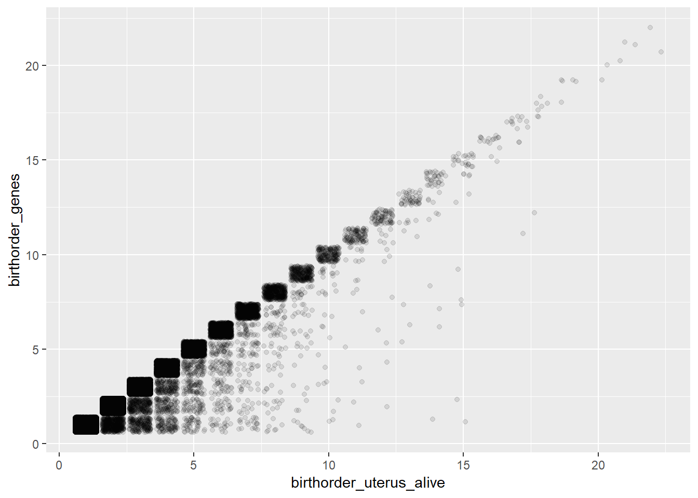
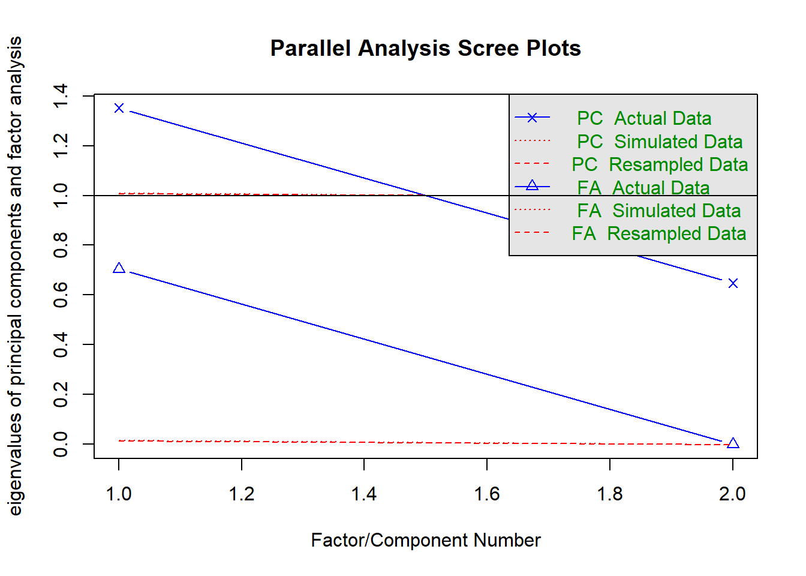
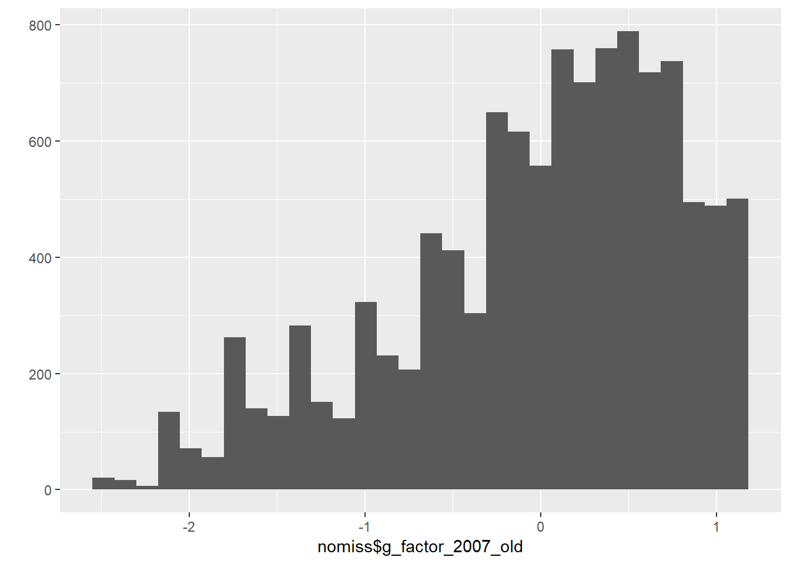

Data Wrangling
Helper
source("0_helpers.R")## Warning: package 'rmarkdown' was built under R version 3.4.3## Warning: package 'knitr' was built under R version 3.4.3##
## Attaching package: 'formr'## The following object is masked from 'package:rmarkdown':
##
## word_document## Warning: package 'lubridate' was built under R version 3.4.3##
## Attaching package: 'lubridate'## The following object is masked from 'package:base':
##
## date## Warning: package 'stringr' was built under R version 3.4.3## Loading required package: carData## lattice theme set by effectsTheme()
## See ?effectsTheme for details.##
## Attaching package: 'data.table'## The following objects are masked from 'package:lubridate':
##
## hour, isoweek, mday, minute, month, quarter, second, wday, week, yday, year## The following objects are masked from 'package:formr':
##
## first, last## Loading required package: Matrix##
## Attaching package: 'lmerTest'## The following object is masked from 'package:lme4':
##
## lmer## The following object is masked from 'package:stats':
##
## step##
## Attaching package: 'cowplot'## The following object is masked from 'package:ggplot2':
##
## ggsave## Warning: package 'haven' was built under R version 3.4.3##
## Attaching package: 'psych'## The following objects are masked from 'package:ggplot2':
##
## %+%, alpha## This is lavaan 0.5-23.1097## lavaan is BETA software! Please report any bugs.##
## Attaching package: 'lavaan'## The following object is masked from 'package:psych':
##
## cor2cov## Loading required package: lattice## Loading required package: survival## Loading required package: Formula##
## Attaching package: 'Hmisc'## The following object is masked from 'package:psych':
##
## describe## The following objects are masked from 'package:base':
##
## format.pval, round.POSIXt, trunc.POSIXt, units## Warning: package 'tidyr' was built under R version 3.4.3##
## Attaching package: 'tidyr'## The following object is masked from 'package:Matrix':
##
## expand##
## Attaching package: 'dplyr'## The following objects are masked from 'package:Hmisc':
##
## combine, src, summarize## The following objects are masked from 'package:data.table':
##
## between, first, last## The following objects are masked from 'package:lubridate':
##
## intersect, setdiff, union## The following objects are masked from 'package:formr':
##
## first, last## The following objects are masked from 'package:stats':
##
## filter, lag## The following objects are masked from 'package:base':
##
## intersect, setdiff, setequal, union## Warning: package 'coefplot' was built under R version 3.4.3Import data
All data is retrieved from the RAND foundation
### Informations about individuals living in the household in 2014/2015
## All Individuals living in the household
bk_ar1 = read_dta("data/hh14_all_dta/bk_ar1.dta") # Book K, Section ar
# compute father pidlink
bk_ar1 = left_join(bk_ar1, bk_ar1 %>% select(hhid14_9, pid14, pidlink) %>% rename(ar10 = pid14, father_pidlink = pidlink), by = c("hhid14_9", "ar10"))## Warning: Column `ar10` has different attributes on LHS and RHS of join# compute mother pidlink
bk_ar1 = left_join(bk_ar1, bk_ar1 %>% select(hhid14_9, pid14, pidlink) %>% rename(ar11 = pid14, mother_pidlink = pidlink), by = c("hhid14_9", "ar11"))## Warning: Column `ar11` has different attributes on LHS and RHS of join### Informations from IFLS wave 5 to link data to earlier waves:
ptrack = read_dta("data/hh14_all_dta/ptrack.dta") # Tracking informations
### Pregnancy Informations from mother
## Wave 5 - 2014
w5_pregnancy = read_dta("data/hh14_all_dta/b4_ch1.dta") # Book 4, Section ch
## Wave 4 - 2007
w4_pregnancy = read_dta("data/hh07_all_dta/b4_ch1.dta") # Book 4, Section ch
## Wave 3 - 2000
w3_pregnancy = read_dta("data/hh00_all_dta/b4_ch1.dta") # Book 4, Section ch
## Wave 2 - 1997
w2_pregnancy = read_dta("data/hh97dta/b4_ch1.dta") # Book 4, Section ch
## Wave 1 - 1993
w1_pregnancy = read_dta("data/hh93dta/buk4ch1.dta") # Book 4, Section ch
### Marriage information from mother
## Wave 5 - 2014
w5_marriage= read_dta("data/hh14_all_dta/b4_kw3.dta") # Book 4, Section kw3
## Wave 4 - 2007
w4_marriage = read_dta("data/hh07_all_dta/b4_kw2.dta") # Book 4, Section kw2
## Wave 3 - 2000
w3_marriage = read_dta("data/hh00_all_dta/b4_kw3.dta") # Book 4, Section kw3
## Wave 2 - 1997
w2_marriage = read_dta("data/hh97dta/b4_kw2.dta") # Book 4, Section kw2
## Wave 1 - 1993
w1_marriage = read_dta("data/hh93dta/buk4kw2.dta") # Book 4, Section kw2
## Additional marriage information from mother
# Wave 5 - 2014
w5_marriage_additional = read_dta("data/hh14_all_dta/b4_cov.dta") # Book 4, Section cov
# Wave 4 - 2007
w4_marriage_additional = read_dta("data/hh07_all_dta/b4_cov.dta") # Book 4, Section cov
# Wave 3 - 2000
w3_marriage_additional = read_dta("data/hh00_all_dta/b4_cov.dta") # Book 4, Section cov
# Wave 2 - 1997
w2_marriage_additional = read_dta("data/hh97dta/b4_cov.dta") # Book 4, Section cov
# Wave 1 - 1993
w1_marriage_additional = read_dta("data/hh93dta/bukkar2.dta") # Book K, Section ar, household roaster
### IQ Information
ek_ek2 = read_dta("data/hh14_all_dta/ek_ek2.dta") # Book ek2: >15 years
ek_ek1 = read_dta("data/hh14_all_dta/ek_ek1.dta") # Book ek1: <15 years
# additional information (counting backwards, adaptive testing) for adults
b3b_cob = read_dta("data/hh14_all_dta/b3b_cob.dta") # Book 3b, Section cob
b3b_co1 = read_dta("data/hh14_all_dta/b3b_co1.dta") # Book 3b, Section co1
# additional information from earlier waves
bek_ek1 = read_dta("data/hh07_all_dta/bek_ek1.dta") # Intelligence information from wave 4 (2007): 7-14
bek_ek2 = read_dta("data/hh07_all_dta/bek_ek2.dta") # Intelligence info from wave 4 (2007): 15 - 24
bek00 = read_dta("data/hh00_all_dta/bek.dta") # Intelligence information from wave 3 (2000)
bek97 = read_dta("data/hh97dta/bek.dta") #Intelligence information from wave 2 (1997)
### Personality Information (only for adults)
b3b_psn = read_dta("data/hh14_all_dta/b3b_psn.dta") # Book 3b, Section psn
### Risk taking
b3a_si = read_dta("data/hh14_all_dta/b3a_si.dta") # Book 3a, Section si
### Educational Attainment
b3a_dl1 = read_dta("data/hh14_all_dta/b3a_dl1.dta") # Book 3a, Section dl1
### EBTANAS/UAN/UN Score
b3a_dl3 = read_dta("data/hh14_all_dta/b3a_dl3.dta") # Book 3a, Section dl3
b3a_dl4 = read_dta("data/hh14_all_dta/b3a_dl4.dta") # Book 3a, Section dl4
### Job Information
b3a_tk2 = read_dta("data/hh14_all_dta/b3a_tk2.dta") # Book 3a, Section tk2
### Smoking behavior
b3b_km = read_dta("data/hh14_all_dta/b3b_km.dta") # Book 3b, Section kmBirth order information
Information about pregnancy
## Select data
w5_pregnancy = w5_pregnancy %>% select(pidlink, ch05, ch06, ch06a, ch08, ch09day, ch09mth, ch09yr, ch25)
w4_pregnancy = w4_pregnancy %>% select(pidlink, ch05, ch06, ch06a, ch08, ch09day, ch09mth, ch09yr, ch25)
w3_pregnancy = w3_pregnancy %>% select(pidlink, ch05, ch06, ch06a, ch08, ch09day, ch09mth, ch09yr, ch25)
w2_pregnancy = w2_pregnancy %>% select(pidlink, ch05, ch06, ch06a, ch08, ch09day, ch09mth, ch09yr, ch25)
w1_pregnancy = w1_pregnancy %>%
group_by(pidlink, ch04) %>% mutate(ch06a = if_else(!is.na(pidlink) & !is.na(ch04), if_else( n() > 1, 1, 3), 9)) %>%
ungroup() %>%
select(pidlink, ch05, ch06, ch06a, ch08, ch09day, ch09mth, ch09yr, ch25) %>%
# In the first wave the year is named wrong
mutate(ch09yr = ifelse(ch09yr <= 93, ch09yr, NA),
ch09yr = as.numeric(str_c("19", ch09yr)))
## Combine data
pregnancy = bind_rows(w1 = w1_pregnancy, w2 = w2_pregnancy, w3 = w3_pregnancy, w4 = w4_pregnancy, w5 = w5_pregnancy, .id = "wave")## Warning in bind_rows_(x, .id): Vectorizing 'labelled' elements may not preserve their attributes
## Warning in bind_rows_(x, .id): Vectorizing 'labelled' elements may not preserve their attributes
## Warning in bind_rows_(x, .id): Vectorizing 'labelled' elements may not preserve their attributes
## Warning in bind_rows_(x, .id): Vectorizing 'labelled' elements may not preserve their attributes
## Warning in bind_rows_(x, .id): Vectorizing 'labelled' elements may not preserve their attributes
## Warning in bind_rows_(x, .id): Vectorizing 'labelled' elements may not preserve their attributespregnancy = codebook::rescue_attributes(pregnancy, w5_pregnancy)
## Rename Variables
pregnancy = pregnancy %>% rename(chron_order_birth = ch05, lifebirths = ch06, multiple_birth = ch06a, gender = ch08,
birth_day = ch09day, birth_month = ch09mth, birth_year = ch09yr,
mother_pidlink = pidlink, alive = ch25) # pregnancy$lifebirths values: 1 = still pregnant, 2 = livebirth, 3 = still birth, 4 = misscarriage
## Set values as NA that are missing
pregnancy = pregnancy %>%
mutate(birth_day = ifelse(birth_day>31, NA, birth_day),
birth_month = ifelse(birth_month>12, NA, birth_month),
birth_year = ifelse(birth_year>2016, NA, birth_year),
birth_day = ifelse(is.nan(birth_day), NA, birth_day),
birth_month = ifelse(is.nan(birth_month), NA, birth_month),
birth_year = ifelse(is.nan(birth_year), NA, birth_year),
multiple_birth = ifelse(multiple_birth == 9, NA, multiple_birth),
multiple_birth = ifelse(is.nan(multiple_birth), NA, multiple_birth))
pregnancy$month = paste0(pregnancy$birth_year,"-", ifelse(is.na(pregnancy$birth_month), "01",
pad_month(pregnancy$birth_month)))
pregnancy = pregnancy %>%
mutate(birthdate = all_available_info_birth_date(birth_year, birth_month, birth_day),
mother_birthdate = str_c(mother_pidlink, "-", birthdate),
mother_birthorder = paste0(mother_pidlink , "-", chron_order_birth))
pregnancy = pregnancy %>%
mutate(wave = str_sub(wave, 2, 3) %>% as.numeric()) %>% # from most recent wave to oldest
arrange(desc(wave)) %>% # use most recent wave (because these will have pregnancy outcomes)
group_by(mother_birthdate) %>%
mutate(birthdate_duped_in_earlier_wave = min_rank(wave)) %>%
group_by(mother_birthorder) %>%
mutate(birthorder_duped_in_earlier_wave = min_rank(wave))
# these are pregnancy that changes status (i.e. ongoing in wave 2, miscarried/born by wave 3)
crosstabs(~ birthdate_duped_in_earlier_wave + birthorder_duped_in_earlier_wave + is.na(birthdate), pregnancy)| is.na(birthdate) | FALSE | TRUE | ||
| birthdate_duped_in_earlier_wave | birthorder_duped_in_earlier_wave | |||
| 1 | 1 | 36830 | 1339 | |
| 2 | 9330 | 0 | ||
| 3 | 2189 | 0 | ||
| 4 | 444 | 0 | ||
| 5 | 55 | 0 | ||
| 2 | 1 | 182 | 0 | |
| 2 | 2371 | 0 | ||
| 3 | 807 | 0 | ||
| 4 | 218 | 0 | ||
| 5 | 42 | 0 | ||
| 3 | 1 | 3 | 0 | |
| 2 | 80 | 0 | ||
| 3 | 191 | 0 | ||
| 4 | 58 | 0 | ||
| 5 | 16 | 0 | ||
| 4 | 1 | 1 | 0 | |
| 2 | 1 | 0 | ||
| 3 | 5 | 0 | ||
| 4 | 31 | 0 | ||
| 5 | 5 | 0 | ||
| 5 | 1 | 0 | 0 | |
| 2 | 0 | 0 | ||
| 3 | 2 | 0 | ||
| 4 | 0 | 0 | ||
| 5 | 0 | 0 | ||
| 6 | 1 | 0 | 0 | |
| 2 | 0 | 0 | ||
| 3 | 0 | 0 | ||
| 4 | 1 | 0 | ||
| 5 | 1 | 0 | ||
| 7 | 1 | 0 | 0 | |
| 2 | 0 | 0 | ||
| 3 | 0 | 0 | ||
| 4 | 2 | 0 | ||
| 5 | 0 | 0 | ||
| 1340 | 1 | 0 | 313 | |
| 2 | 0 | 151 | ||
| 3 | 0 | 0 | ||
| 4 | 0 | 0 | ||
| 5 | 0 | 0 | ||
| 1804 | 1 | 0 | 442 | |
| 2 | 0 | 160 | ||
| 3 | 0 | 57 | ||
| 4 | 0 | 0 | ||
| 5 | 0 | 0 | ||
| 2463 | 1 | 0 | 590 | |
| 2 | 0 | 56 | ||
| 3 | 0 | 23 | ||
| 4 | 0 | 9 | ||
| 5 | 0 | 0 | ||
| 3141 | 1 | 0 | 727 | |
| 2 | 0 | 171 | ||
| 3 | 0 | 65 | ||
| 4 | 0 | 42 | ||
| 5 | 0 | 10 |
# unfortunately, sometimes chron_order_birth is inconsistent with birthdates
# to eliminate duplicates from the pregnancy file (because pregnancies changed statuses)
# now, for those where we don't know the birthdate, we keep only unique birth orders
# for those, where we know the birthdate, we keep only unique birthdates (as this is higher q information)
pregnancy = pregnancy %>%
filter((is.na(birthdate) && birthorder_duped_in_earlier_wave == 1) | birthdate_duped_in_earlier_wave == 1) %>%
ungroup() # eliminate dupes across waves (same mother_birthdate), keep mult births
crosstabs(~ birthdate_duped_in_earlier_wave + birthorder_duped_in_earlier_wave + is.na(birthdate), pregnancy)| is.na(birthdate) | FALSE | TRUE | ||
| birthdate_duped_in_earlier_wave | birthorder_duped_in_earlier_wave | |||
| 1 | 1 | 36830 | 1339 | |
| 2 | 9330 | 0 | ||
| 3 | 2189 | 0 | ||
| 4 | 444 | 0 | ||
| 5 | 55 | 0 | ||
| 1340 | 1 | 0 | 170 | |
| 2 | 0 | 0 | ||
| 3 | 0 | 0 | ||
| 4 | 0 | 0 | ||
| 5 | 0 | 0 | ||
| 1804 | 1 | 0 | 167 | |
| 2 | 0 | 0 | ||
| 3 | 0 | 0 | ||
| 4 | 0 | 0 | ||
| 5 | 0 | 0 | ||
| 2463 | 1 | 0 | 252 | |
| 2 | 0 | 0 | ||
| 3 | 0 | 0 | ||
| 4 | 0 | 0 | ||
| 5 | 0 | 0 | ||
| 3141 | 1 | 0 | 727 | |
| 2 | 0 | 0 | ||
| 3 | 0 | 0 | ||
| 4 | 0 | 0 | ||
| 5 | 0 | 0 |
x = (unique(pregnancy$mother_pidlink))
##remove all with missing birthdate/miscarriage date
table(is.na(pregnancy$birthdate))| FALSE | TRUE |
|---|---|
| 48848 | 2655 |
# for whatever reason there are some multiple births with just one row in the data, but number are low enough
# that we consider some errors in the records the likely reason
pregnancy %>% filter(!is.na(birthdate)) %>% group_by(mother_birthdate) %>%
mutate(mult = n()) %>% crosstabs(~ mult + multiple_birth + is.na(birth_month), data = .)| is.na(birth_month) | FALSE | TRUE | ||
| mult | multiple_birth | |||
| 1 | 1 | 682 | 34 | |
| 3 | 37015 | 5670 | ||
| NA | 2613 | 1974 | ||
| 2 | 1 | 493 | 93 | |
| 3 | 28 | 100 | ||
| NA | 13 | 99 | ||
| 3 | 1 | 8 | 0 | |
| 3 | 1 | 4 | ||
| NA | 0 | 17 | ||
| 4 | 1 | 4 | 0 | |
| 3 | 0 | 0 | ||
| NA | 0 | 0 |
## Form variable for any multiple birth in family
pregnancy = pregnancy %>% group_by(mother_pidlink) %>% mutate(any_multiple_birth = if_else(any(multiple_birth == 1), 1, 0))
prop.table(table(pregnancy$multiple_birth))| 1 | 3 |
|---|---|
| 0.02956 | 0.9704 |
prop.table(table(pregnancy$any_multiple_birth))| 0 | 1 |
|---|---|
| 0.896 | 0.104 |
Information about marriage history
## Select marriage data
w5_marriage = w5_marriage %>% select(pidlink, kw10mth, kw10yr, kw18mth, kw18yr, kw11, kw19)
w4_marriage = w4_marriage %>% select(pidlink, kw10mth, kw10yr, kw18mth, kw18yr, kw11, kw19)
w3_marriage = w3_marriage %>% select(pidlink, kw10mth, kw10yr, kw18mth, kw18yr, kw11, kw19)
w2_marriage = w2_marriage %>% select(pidlink, kw10mth, kw10yr, kw18mth, kw18yr, kw11, kw19)
w1_marriage = w1_marriage %>% select(pidlink, kw05a, kw05b, kw13a, kw13b, kw06, kw14age)
# In the first wave the year is named wrong
w1_marriage = w1_marriage %>%
mutate(kw05a = ifelse(kw05a <= 93, as.numeric(str_c("19", w1_marriage$kw05a)), kw05a),
kw13a = ifelse(kw13a <=93 , as.numeric(str_c("19", w1_marriage$kw13a)), kw13a))
# And the column names are wrong...
w1_marriage = w1_marriage %>% rename(kw10mth = kw05b, kw10yr = kw05a, kw18mth = kw13b, kw18yr = kw13a, kw11 = kw06, kw19 = kw14age)
## Select additional marriage information (age of respondent)
w5_marriage_additional = w5_marriage_additional %>% select(pidlink, age, dob_yr)
w4_marriage_additional = w4_marriage_additional %>% select(pidlink, age, dob_yr)
w3_marriage_additional = w3_marriage_additional %>% select(pidlink, age, dob_yr)
w2_marriage_additional = w2_marriage_additional %>% select(pidlink, age, dob_yr)
w1_marriage_additional = w1_marriage_additional %>% select(pidlink, ar09yr, ar08yr)
# In the first wave the year is named wrong
w1_marriage_additional = w1_marriage_additional %>%
mutate(ar08yr = ifelse(ar08yr <= 93,
as.numeric(str_c("19", w1_marriage_additional$ar08yr)),
ar08yr))
# And the column names are wrong...
w1_marriage_additional = w1_marriage_additional %>% rename(age = ar09yr, dob_yr = ar08yr)
## Combine marriage information and additional marriage information:
w1_marriage = left_join(w1_marriage, w1_marriage_additional, by = "pidlink") %>%
mutate(wave = as.numeric("1993"))
w2_marriage = left_join(w2_marriage, w2_marriage_additional, by = "pidlink") %>%
mutate(wave = as.numeric("1997"))
w3_marriage = left_join(w3_marriage, w3_marriage_additional, by = "pidlink") %>%
mutate(wave = as.numeric("2000"))
w4_marriage = left_join(w4_marriage, w4_marriage_additional, by = "pidlink") %>%
mutate(wave = as.numeric("2007"))
w5_marriage = left_join(w5_marriage, w5_marriage_additional, by = "pidlink") %>%
mutate(wave = as.numeric("2014"))
## Combine marriage informations
marriage = bind_rows(w1_marriage, w2_marriage, w3_marriage, w4_marriage, w5_marriage)## Warning in bind_rows_(x, .id): Vectorizing 'labelled' elements may not preserve their attributes
## Warning in bind_rows_(x, .id): Vectorizing 'labelled' elements may not preserve their attributes
## Warning in bind_rows_(x, .id): Vectorizing 'labelled' elements may not preserve their attributes
## Warning in bind_rows_(x, .id): Vectorizing 'labelled' elements may not preserve their attributes
## Warning in bind_rows_(x, .id): Vectorizing 'labelled' elements may not preserve their attributes
## Warning in bind_rows_(x, .id): Vectorizing 'labelled' elements may not preserve their attributes# Rename columns
marriage = marriage %>% rename(start_year = kw10yr, start_month = kw10mth, end_year = kw18yr, end_month = kw18mth, start_age = kw11, end_age = kw19, birth_year = dob_yr, birth_age = age)
# Set values as NA that are missing
marriage$start_year[ marriage$start_year<1900] = NA
marriage$start_year[ marriage$start_year>2016] = NA
marriage$start_year[ is.nan(marriage$start_year)] = NA
marriage$end_year[ marriage$end_year<1900] = NA
marriage$end_year[ marriage$end_year>2016] = NA
marriage$end_year[ is.nan(marriage$end_year)] = NA
marriage$start_month [marriage$start_month>12] = NA
marriage$start_month [is.nan(marriage$start_month)] = NA
marriage$end_month [marriage$end_month>12] = NA
marriage$end_month [is.nan(marriage$end_month)] = NA
marriage$start_age [marriage$start_age > 97] = NA
marriage$start_age [is.nan(marriage$start_age)] = NA
marriage$end_age [marriage$end_age > 97] = NA
marriage$end_age [is.nan(marriage$end_age)] = NA
marriage$birth_year[ marriage$birth_year<1900] = NA
marriage$birth_year[ marriage$birth_year>2016] = NA
marriage$birth_year[ is.nan(marriage$birth_year)] = NA
marriage$birth_age [marriage$birth_age > 97] = NA
marriage$birth_age [is.nan(marriage$birth_age)] = NA
## Reconstruct marriage start year and end year for marriages with missing year
marriage = marriage %>%
mutate(birth_year = ifelse(is.na(birth_year), wave - birth_age, birth_year),
start_year = ifelse(is.na(start_year), birth_year + start_age, start_year),
end_year = ifelse(is.na(end_year), birth_year + end_age, end_year))
marriage = marriage %>% arrange(pidlink, start_year, start_month, start_age, end_year, end_month, end_age)
marriage = marriage %>% filter(!duplicated(cbind(pidlink, start_year, start_month)) | is.na(start_year) | is.na(start_month)) # nobody gets married twice on the same day, right? so these are dupes.
## Calculate date for beginning of marriage:
marriage = marriage %>%
ungroup() %>%
mutate(start_string = str_c(start_year, "-", ifelse(is.na(start_month), "01",
pad_month(start_month)), "-01"),
end_string = str_c(end_year, "-", ifelse(is.na(end_month), "12", pad_month(end_month)), "-01"),
start = ymd(start_string),
end = ymd(end_string) + months(1) - days(1))
## Count number of marriages
marriage = marriage %>%
arrange(pidlink, start, end) %>%
group_by(pidlink) %>%
mutate(number_marriages = n(),
order_marriage = row_number(),
marriage_id = paste0(pidlink, "_", as.character(order_marriage), "_",
as.character(start), "/",as.character(end)))
### Marriage Timeline
minimum_start = min(ymd(str_c(pregnancy$month, "-01")), na.rm = T)## Warning: 2655 failed to parse.maximum_end = max(ymd(str_c(pregnancy$month, "-01")), na.rm = T)## Warning: 2655 failed to parse.marriage_timeline = marriage %>%
mutate(implied_start = as.Date(ifelse(is.na(start), minimum_start , start),
origin="1970-01-01"),
implied_end = as.Date(ifelse(is.na(end), maximum_end , end),
origin="1970-01-01")) %>%
filter(implied_start < implied_end)
marriage_timeline = marriage_timeline %>%
rowwise() %>%
do(data.frame(
marriage_id=.$marriage_id,
mother_pidlink = .$pidlink,
order_marriage = .$order_marriage,
start = .$start,
end = .$end,
month = seq(.$implied_start,.$implied_end, by="1 month") ))
# no duplicate mother_id - month combinations (no two marriages at the same time)
marriage_timeline = marriage_timeline %>%
arrange(mother_pidlink, start, end) %>%
distinct(mother_pidlink, month, .keep_all = TRUE)
marriage_timeline$month = stringr::str_sub(as.character(marriage_timeline$month),1,7)
# we assume that fathers are those to whom mothers were married in the birth month
pregnancy = pregnancy %>% left_join(marriage_timeline, by = c("mother_pidlink", "month")) %>% ungroup()## Warning: Column `mother_pidlink` has different attributes on LHS and RHS of joinBirth order calculations
#### Maternal Pregnancy Order
pregnancy1 = pregnancy %>%
group_by(mother_pidlink) %>%
mutate(birthorder_uterus_preg = min_rank(birthdate),
birthorder_uterus_preg2 = ifelse(is.na(birthorder_uterus_preg), chron_order_birth,
ifelse(chron_order_birth > birthorder_uterus_preg,
chron_order_birth, birthorder_uterus_preg)),
# birthorder_uterus_preg = ifelse(any_multiple_birth == 1, NA, birthorder_uterus_preg),
sibling_count_uterus_preg = sum(!is.na(birthdate)),
sibling_count_uterus_preg2 = ifelse(is.na(sibling_count_uterus_preg), max(chron_order_birth, na.rm = T),
ifelse(max(chron_order_birth, na.rm = T) > sibling_count_uterus_preg,
max(chron_order_birth, na.rm = T), sibling_count_uterus_preg))
# ,sibling_count_uterus_preg = ifelse(any_multiple_birth == 1, NA, sibling_count_uterus_preg)
) %>%
ungroup()## Warning in max(chron_order_birth, na.rm = T): kein nicht-fehlendes Argument für max; gebe -Inf zurück
## Warning in max(chron_order_birth, na.rm = T): kein nicht-fehlendes Argument für max; gebe -Inf zurück
## Warning in max(chron_order_birth, na.rm = T): kein nicht-fehlendes Argument für max; gebe -Inf zurück
## Warning in max(chron_order_birth, na.rm = T): kein nicht-fehlendes Argument für max; gebe -Inf zurück
## Warning in max(chron_order_birth, na.rm = T): kein nicht-fehlendes Argument für max; gebe -Inf zurück
## Warning in max(chron_order_birth, na.rm = T): kein nicht-fehlendes Argument für max; gebe -Inf zurück
## Warning in max(chron_order_birth, na.rm = T): kein nicht-fehlendes Argument für max; gebe -Inf zurück
## Warning in max(chron_order_birth, na.rm = T): kein nicht-fehlendes Argument für max; gebe -Inf zurück
## Warning in max(chron_order_birth, na.rm = T): kein nicht-fehlendes Argument für max; gebe -Inf zurück
## Warning in max(chron_order_birth, na.rm = T): kein nicht-fehlendes Argument für max; gebe -Inf zurück
## Warning in max(chron_order_birth, na.rm = T): kein nicht-fehlendes Argument für max; gebe -Inf zurück
## Warning in max(chron_order_birth, na.rm = T): kein nicht-fehlendes Argument für max; gebe -Inf zurück
## Warning in max(chron_order_birth, na.rm = T): kein nicht-fehlendes Argument für max; gebe -Inf zurück
## Warning in max(chron_order_birth, na.rm = T): kein nicht-fehlendes Argument für max; gebe -Inf zurück
## Warning in max(chron_order_birth, na.rm = T): kein nicht-fehlendes Argument für max; gebe -Inf zurück
## Warning in max(chron_order_birth, na.rm = T): kein nicht-fehlendes Argument für max; gebe -Inf zurück
## Warning in max(chron_order_birth, na.rm = T): kein nicht-fehlendes Argument für max; gebe -Inf zurück
## Warning in max(chron_order_birth, na.rm = T): kein nicht-fehlendes Argument für max; gebe -Inf zurück
## Warning in max(chron_order_birth, na.rm = T): kein nicht-fehlendes Argument für max; gebe -Inf zurück
## Warning in max(chron_order_birth, na.rm = T): kein nicht-fehlendes Argument für max; gebe -Inf zurück
## Warning in max(chron_order_birth, na.rm = T): kein nicht-fehlendes Argument für max; gebe -Inf zurück
## Warning in max(chron_order_birth, na.rm = T): kein nicht-fehlendes Argument für max; gebe -Inf zurück
## Warning in max(chron_order_birth, na.rm = T): kein nicht-fehlendes Argument für max; gebe -Inf zurück
## Warning in max(chron_order_birth, na.rm = T): kein nicht-fehlendes Argument für max; gebe -Inf zurück
## Warning in max(chron_order_birth, na.rm = T): kein nicht-fehlendes Argument für max; gebe -Inf zurück
## Warning in max(chron_order_birth, na.rm = T): kein nicht-fehlendes Argument für max; gebe -Inf zurück
## Warning in max(chron_order_birth, na.rm = T): kein nicht-fehlendes Argument für max; gebe -Inf zurück
## Warning in max(chron_order_birth, na.rm = T): kein nicht-fehlendes Argument für max; gebe -Inf zurück
## Warning in max(chron_order_birth, na.rm = T): kein nicht-fehlendes Argument für max; gebe -Inf zurück
## Warning in max(chron_order_birth, na.rm = T): kein nicht-fehlendes Argument für max; gebe -Inf zurück
## Warning in max(chron_order_birth, na.rm = T): kein nicht-fehlendes Argument für max; gebe -Inf zurück
## Warning in max(chron_order_birth, na.rm = T): kein nicht-fehlendes Argument für max; gebe -Inf zurück
## Warning in max(chron_order_birth, na.rm = T): kein nicht-fehlendes Argument für max; gebe -Inf zurück
## Warning in max(chron_order_birth, na.rm = T): kein nicht-fehlendes Argument für max; gebe -Inf zurück
## Warning in max(chron_order_birth, na.rm = T): kein nicht-fehlendes Argument für max; gebe -Inf zurück
## Warning in max(chron_order_birth, na.rm = T): kein nicht-fehlendes Argument für max; gebe -Inf zurück
## Warning in max(chron_order_birth, na.rm = T): kein nicht-fehlendes Argument für max; gebe -Inf zurück
## Warning in max(chron_order_birth, na.rm = T): kein nicht-fehlendes Argument für max; gebe -Inf zurück
## Warning in max(chron_order_birth, na.rm = T): kein nicht-fehlendes Argument für max; gebe -Inf zurück
## Warning in max(chron_order_birth, na.rm = T): kein nicht-fehlendes Argument für max; gebe -Inf zurück
## Warning in max(chron_order_birth, na.rm = T): kein nicht-fehlendes Argument für max; gebe -Inf zurück
## Warning in max(chron_order_birth, na.rm = T): kein nicht-fehlendes Argument für max; gebe -Inf zurück
## Warning in max(chron_order_birth, na.rm = T): kein nicht-fehlendes Argument für max; gebe -Inf zurück
## Warning in max(chron_order_birth, na.rm = T): kein nicht-fehlendes Argument für max; gebe -Inf zurück
## Warning in max(chron_order_birth, na.rm = T): kein nicht-fehlendes Argument für max; gebe -Inf zurück
## Warning in max(chron_order_birth, na.rm = T): kein nicht-fehlendes Argument für max; gebe -Inf zurück
## Warning in max(chron_order_birth, na.rm = T): kein nicht-fehlendes Argument für max; gebe -Inf zurück
## Warning in max(chron_order_birth, na.rm = T): kein nicht-fehlendes Argument für max; gebe -Inf zurück
## Warning in max(chron_order_birth, na.rm = T): kein nicht-fehlendes Argument für max; gebe -Inf zurück
## Warning in max(chron_order_birth, na.rm = T): kein nicht-fehlendes Argument für max; gebe -Inf zurück
## Warning in max(chron_order_birth, na.rm = T): kein nicht-fehlendes Argument für max; gebe -Inf zurück
## Warning in max(chron_order_birth, na.rm = T): kein nicht-fehlendes Argument für max; gebe -Inf zurück
## Warning in max(chron_order_birth, na.rm = T): kein nicht-fehlendes Argument für max; gebe -Inf zurück
## Warning in max(chron_order_birth, na.rm = T): kein nicht-fehlendes Argument für max; gebe -Inf zurück
## Warning in max(chron_order_birth, na.rm = T): kein nicht-fehlendes Argument für max; gebe -Inf zurück
## Warning in max(chron_order_birth, na.rm = T): kein nicht-fehlendes Argument für max; gebe -Inf zurück
## Warning in max(chron_order_birth, na.rm = T): kein nicht-fehlendes Argument für max; gebe -Inf zurück
## Warning in max(chron_order_birth, na.rm = T): kein nicht-fehlendes Argument für max; gebe -Inf zurück
## Warning in max(chron_order_birth, na.rm = T): kein nicht-fehlendes Argument für max; gebe -Inf zurück
## Warning in max(chron_order_birth, na.rm = T): kein nicht-fehlendes Argument für max; gebe -Inf zurück
## Warning in max(chron_order_birth, na.rm = T): kein nicht-fehlendes Argument für max; gebe -Inf zurück
## Warning in max(chron_order_birth, na.rm = T): kein nicht-fehlendes Argument für max; gebe -Inf zurück
## Warning in max(chron_order_birth, na.rm = T): kein nicht-fehlendes Argument für max; gebe -Inf zurück
## Warning in max(chron_order_birth, na.rm = T): kein nicht-fehlendes Argument für max; gebe -Inf zurück
## Warning in max(chron_order_birth, na.rm = T): kein nicht-fehlendes Argument für max; gebe -Inf zurück
## Warning in max(chron_order_birth, na.rm = T): kein nicht-fehlendes Argument für max; gebe -Inf zurück
## Warning in max(chron_order_birth, na.rm = T): kein nicht-fehlendes Argument für max; gebe -Inf zurück
## Warning in max(chron_order_birth, na.rm = T): kein nicht-fehlendes Argument für max; gebe -Inf zurück
## Warning in max(chron_order_birth, na.rm = T): kein nicht-fehlendes Argument für max; gebe -Inf zurück
## Warning in max(chron_order_birth, na.rm = T): kein nicht-fehlendes Argument für max; gebe -Inf zurück
## Warning in max(chron_order_birth, na.rm = T): kein nicht-fehlendes Argument für max; gebe -Inf zurück
## Warning in max(chron_order_birth, na.rm = T): kein nicht-fehlendes Argument für max; gebe -Inf zurückcor.test(pregnancy1$birthorder_uterus_preg, pregnancy1$birthorder_uterus_preg2)| Test statistic | df | P value | Alternative hypothesis | cor |
|---|---|---|---|---|
| 1876 | 48846 | 0 * * * | two.sided | 0.9931 |
cor.test(pregnancy1$sibling_count_uterus_preg, pregnancy1$sibling_count_uterus_preg)| Test statistic | df | P value | Alternative hypothesis | cor |
|---|---|---|---|---|
| Inf | 51501 | 0 * * * | two.sided | 1 |
crosstabs(~ is.na(birthorder_uterus_preg) + is.na(birthorder_uterus_preg2) + is.na(birthdate), pregnancy1)| is.na(birthdate) | FALSE | TRUE | ||
| is.na(birthorder_uterus_preg) | is.na(birthorder_uterus_preg2) | |||
| FALSE | FALSE | 48848 | 0 | |
| TRUE | 0 | 0 | ||
| TRUE | FALSE | 0 | 2426 | |
| TRUE | 0 | 229 |
crosstabs(~ is.na(sibling_count_uterus_preg) + is.na(sibling_count_uterus_preg2) + is.na(birthdate), pregnancy1)| is.na(birthdate) | FALSE | TRUE | ||
| is.na(sibling_count_uterus_preg) | is.na(sibling_count_uterus_preg2) | |||
| FALSE | FALSE | 48848 | 2655 |
# our birthdate based birthorder estimates are extremely consistent with chron_order_birth
#### Maternal Birth Order
pregnancy2 = pregnancy %>%
filter(lifebirths == 2) %>%
group_by(mother_pidlink) %>%
mutate(birthorder_uterus_alive = min_rank(birthdate),
# birthorder_uterus_alive = ifelse(any_multiple_birth == 1, NA, birthorder_uterus_alive),
sibling_count_uterus_alive = sum(!is.na(birthdate))
# ,sibling_count_uterus_alive = ifelse(any_multiple_birth == 1, NA, sibling_count_uterus_alive)
) %>%
ungroup()
pregnancy2 = pregnancy2 %>% select(mother_birthdate, birthorder_uterus_alive, sibling_count_uterus_alive) %>% distinct()
#### Parental Full Sibling Birthorder
pregnancy3 = pregnancy %>%
filter(lifebirths == 2) %>%
group_by(marriage_id) %>%
mutate(birthorder_genes = min_rank(birthdate),
birthorder_genes = ifelse(is.na(marriage_id), NA, birthorder_genes),
sibling_count_genes = ifelse(is.na(marriage_id), NA, sum(!is.na(marriage_id)))) %>%
ungroup()
pregnancy3 = pregnancy3 %>% select(mother_birthdate, birthorder_genes, sibling_count_genes) %>% distinct()
# remove dupes because of missings and twins
pregnancy1 <- pregnancy1 %>% select(-birthorder_uterus_preg2, -sibling_count_uterus_preg2) %>%
filter(!is.na(birthdate)) %>%
distinct(mother_birthdate, .keep_all = TRUE)
pregnancy2 <- pregnancy2 %>%
distinct(mother_birthdate, .keep_all = TRUE)
### Combine birthorder data
table(duplicated(pregnancy1$mother_birthdate))| FALSE |
|---|
| 48412 |
table(duplicated(pregnancy2$mother_birthdate))| FALSE |
|---|
| 43189 |
table(duplicated(pregnancy3$mother_birthdate))| FALSE |
|---|
| 43189 |
pregnancy = left_join(pregnancy1, pregnancy2, by="mother_birthdate") %>% ungroup()
pregnancy = left_join(pregnancy, pregnancy3, by = "mother_birthdate") %>% ungroup()Birth order graphs
### Graphs
## Biological Birthorder - Uterus_Pregnancies
ggplot(pregnancy, aes(x=sibling_count_uterus_preg, y=birthorder_uterus_preg)) + geom_jitter(alpha = 0.1)
## Biological Birthorder - Uterus_Births
ggplot(pregnancy, aes(x=sibling_count_uterus_alive, y=birthorder_uterus_alive)) + geom_jitter(alpha = 0.1)## Warning: Removed 5224 rows containing missing values (geom_point).
## Biological Birthorder - Full Sibling Order
ggplot(pregnancy, aes(x=sibling_count_genes, y=birthorder_genes)) + geom_jitter(alpha = 0.1)## Warning: Removed 5864 rows containing missing values (geom_point).
## Bio: Uterus_preg vs. Uterus_Births
ggplot(pregnancy, aes(x=birthorder_uterus_preg, y=birthorder_uterus_alive)) + geom_jitter(alpha = 0.1)## Warning: Removed 5224 rows containing missing values (geom_point).
# The birth_order_alive is always lower, which makes sense, becaus not live births (miscarriage, still births are excluded)
## Bio: Uterus_preg vs. Genes
ggplot(pregnancy, aes(x=birthorder_uterus_preg, y=birthorder_genes)) + geom_jitter(alpha = 0.1)## Warning: Removed 5864 rows containing missing values (geom_point).
# The birthorder_genes is always lower, which makes sense, because different/unknown fathers are excluded
## Bio: Uterus_alive vs. Genes
ggplot(pregnancy, aes(x=birthorder_uterus_alive, y=birthorder_genes)) + geom_jitter(alpha = 0.1)## Warning: Removed 5864 rows containing missing values (geom_point).
# children with the same father includes only live births
# chron order birth does not correlate perfectly, unsurprising given that we found chron orders sometimes started
# from 1 in new waves even though previous births were recorded
pregnancy %>% select(chron_order_birth, birthorder_uterus_alive, birthorder_uterus_preg, birthorder_genes) %>% na.omit() %>% cor()| chron_order_birth | birthorder_uterus_alive | birthorder_uterus_preg | birthorder_genes |
|---|---|---|---|
| 1 | 0.7455 | 0.7705 | 0.7238 |
| 0.7455 | 1 | 0.9667 | 0.9679 |
| 0.7705 | 0.9667 | 1 | 0.9359 |
| 0.7238 | 0.9679 | 0.9359 | 1 |
pregnancy %>% select(chron_order_birth, birthorder_uterus_alive, birthorder_uterus_preg, birthorder_genes) %>% missingness_patterns()## index col missings
## 1 birthorder_genes 5864
## 2 birthorder_uterus_alive 5224| Pattern | Freq | Culprit |
|---|---|---|
| ___ | 42548 | _ |
| 1_2 | 5224 | |
| 1__ | 640 | birthorder_genes |
pregnancy %>% select(sibling_count_uterus_alive, sibling_count_uterus_preg, sibling_count_genes) %>% missingness_patterns()## index col missings
## 1 sibling_count_genes 5864
## 2 sibling_count_uterus_alive 5224| Pattern | Freq | Culprit |
|---|---|---|
| ___ | 42548 | _ |
| 1_2 | 5224 | |
| 1__ | 640 | sibling_count_genes |
Select individual data from IFLS 5
### Individuals
individuals = bk_ar1 %>% select(hhid14_9, pidlink, father_pidlink, mother_pidlink, ar01a, ar02b, ar10, ar11, ar07, ar08day, ar08mth, ar08yr, ar09, ar18eyr, ar18emth)
#Rename variables to make it easier
individuals = rename(individuals, relation_to_HH_head = ar02b, fatherID = ar10, motherID = ar11, sex = ar07, age = ar09, status = ar01a, death_yr = ar18eyr, death_month = ar18emth)
# Remove duplicats (some people are mentioned in two households, e.g. because they moved in the last 12 months)
individuals = individuals %>% distinct(pidlink, .keep_all = TRUE)
individuals_unchanged = individuals
## people whose parents can not be identified have to be marked as NA:
individuals$fatherID[ individuals$fatherID>50] = NA
individuals$motherID[ individuals$motherID>50] = NA
## Create date of birth
#Set all variables missing that have not been reported:
individuals$ar08day[ individuals$ar08day>31] = NA
individuals$ar08mth[ individuals$ar08mth>12] = NA
individuals$ar08yr[ individuals$ar08yr>2016] = NA
individuals$ar08day[ is.nan(individuals$ar08day) ] = NA
individuals$ar08mth[ is.nan(individuals$ar08mth) ] = NA
individuals$ar08yr[ is.nan(individuals$ar08yr)] = NA
individuals$death_month[ individuals$death_month>12] = NA
individuals$death_yr[ individuals$death_yr>2016] = NA
individuals$death_month[ is.nan(individuals$death_month) ] = NA
individuals$death_yr[ is.nan(individuals$death_yr)] = NA
## Create variable that contains pidlink of mother and birthdate of child:
individuals = individuals %>%
mutate(birthdate = all_available_info_birth_date(ar08yr, ar08mth, ar08day),
mother_birthdate = str_c(mother_pidlink, "-", birthdate)) # mother_pidlink-YYYY-MM; is NA if birth_year is missing
individuals = individuals %>% group_by(mother_pidlink) %>%
mutate(birthorder_naive_ind = if_else(!is.na(mother_pidlink), min_rank(birthdate), NA_integer_),
sibling_count_naive_ind = if_else(!is.na(mother_pidlink), n(), NA_integer_)) %>%
ungroup()
##Remove all with missing mother_birthdate
# individuals = individuals %>%
# filter(!is.na(mother_birthdate))
#
# individuals = individuals %>%
# group_by(mother_birthdate) %>%
# mutate(twin_order = row_number(birthdate),
# mother_birthdate_unique = paste0(mother_birthdate, "-", twin_order)) %>%
# ungroup() %>%
# select(mother_birthdate_unique, pidlink, sex, age)
#
#
# pregnancy_missing = pregnancy %>%
# mutate(missing = ifelse(!(mother_birthdate_unique %in% individuals$mother_birthdate_unique),
# 1, 0)) %>%
# filter(missing == 1)
# prevent that twins exist 4 times because they appear twice in pregnancy and twice in individuals, by eliminating dupes from pregnancy
# pregnancy_not_missing = pregnancy %>%
# mutate(missing = ifelse(!(mother_birthdate_unique %in% individuals$mother_birthdate_unique),
# 1, 0)) %>%
# filter(missing == 0)
alldata_pregnancy = full_join(pregnancy, individuals,
by = c("mother_pidlink", "birthdate", "mother_birthdate")) %>%
distinct(mother_pidlink, birthdate, pidlink, .keep_all = TRUE)
alldata_pregnancy = alldata_pregnancy %>% group_by(mother_pidlink) %>%
mutate(birthorder_naive = min_rank(if_else(!is.na(mother_pidlink), birthdate, NA_character_)),
sibling_count_naive = if_else(!is.na(mother_pidlink), n(), NA_integer_)) %>%
# filter(is.na(lifebirths) | lifebirths == 2) %>%
# mutate(birthorder_naive3 = if_else(!is.na(mother_pidlink) & (is.na(lifebirths) | lifebirths == 2), min_rank(birthdate), NA_integer_),
# sibling_count_naive3 = if_else(!is.na(mother_pidlink) & (is.na(lifebirths) | lifebirths == 2), sum(is.na(lifebirths) | lifebirths == 2), NA_integer_)) %>%
ungroup()
# alldata_pregnancy = bind_rows(alldata_pregnancy, pregnancy_missing)
prop.table(table(alldata_pregnancy$multiple_birth))| 1 | 3 |
|---|---|
| 0.02601 | 0.974 |
prop.table(table(alldata_pregnancy$any_multiple_birth))| 0 | 1 |
|---|---|
| 0.903 | 0.09701 |
alldata_pregnancy %>% select(birthorder_naive,birthorder_naive_ind,chron_order_birth, birthorder_uterus_alive, birthorder_uterus_preg, birthorder_genes) %>% cor(use='pairwise.complete.obs') %>% round(2)| birthorder_naive | birthorder_naive_ind | chron_order_birth | birthorder_uterus_alive | birthorder_uterus_preg | birthorder_genes |
|---|---|---|---|---|---|
| 1 | 0.82 | 0.74 | 0.93 | 0.95 | 0.9 |
| 0.82 | 1 | 0.56 | 0.84 | 0.79 | 0.83 |
| 0.74 | 0.56 | 1 | 0.75 | 0.75 | 0.72 |
| 0.93 | 0.84 | 0.75 | 1 | 0.97 | 0.97 |
| 0.95 | 0.79 | 0.75 | 0.97 | 1 | 0.94 |
| 0.9 | 0.83 | 0.72 | 0.97 | 0.94 | 1 |
alldata_pregnancy %>% select(birthorder_naive, chron_order_birth, birthorder_uterus_alive, birthorder_uterus_preg, birthorder_genes) %>% codebook::md_pattern()| description | birthorder_naive | chron_order_birth | birthorder_uterus_preg | birthorder_uterus_alive | birthorder_genes | var_miss | n_miss |
|---|---|---|---|---|---|---|---|
| Missings per variable | 34215 | 52695 | 52695 | 57919 | 58559 | 256083 | 256083 |
| Missings in 0 variables | 1 | 1 | 1 | 1 | 1 | 0 | 42682 |
| Missings in 5 variables | 0 | 0 | 0 | 0 | 0 | 5 | 34215 |
| Missings in 4 variables | 1 | 0 | 0 | 0 | 0 | 4 | 18480 |
| Missings in 2 variables | 1 | 1 | 1 | 0 | 0 | 2 | 5224 |
| 1 other, less frequent patterns | 1 | 1 | 1 | 1 | 0 | 1 | 640 |
alldata_pregnancy %>% select(sibling_count_naive, sibling_count_uterus_alive, sibling_count_uterus_preg, sibling_count_genes) %>% cor(use='pairwise.complete.obs') %>% round(2)| sibling_count_naive | sibling_count_uterus_alive | sibling_count_uterus_preg | sibling_count_genes |
|---|---|---|---|
| 1 | 0.92 | 0.93 | 0.9 |
| 0.92 | 1 | 0.96 | 0.97 |
| 0.93 | 0.96 | 1 | 0.93 |
| 0.9 | 0.97 | 0.93 | 1 |
qplot(data=alldata_pregnancy,sibling_count_naive) + facet_wrap(~ is.na(sibling_count_uterus_preg))## `stat_bin()` using `bins = 30`. Pick better value with `binwidth`.## Warning: Removed 34178 rows containing non-finite values (stat_bin).
qplot(data=alldata_pregnancy,birthorder_naive) + facet_wrap(~ is.na(sibling_count_uterus_preg))## `stat_bin()` using `bins = 30`. Pick better value with `binwidth`.## Warning: Removed 34215 rows containing non-finite values (stat_bin).
# prop.table(table(alldata_pregnancy$birthorder_uterus_alive == alldata_pregnancy$birthorder_naive3))
prop.table(table(alldata_pregnancy$birthorder_uterus_alive == alldata_pregnancy$birthorder_naive))| FALSE | TRUE |
|---|---|
| 0.3937 | 0.6063 |
prop.table(table(alldata_pregnancy$birthorder_uterus_preg == alldata_pregnancy$birthorder_naive))| FALSE | TRUE |
|---|---|
| 0.3006 | 0.6994 |
ggplot(alldata_pregnancy, aes(x=birthorder_uterus_alive, y=birthorder_naive)) + geom_jitter(alpha = 0.1)## Warning: Removed 57919 rows containing missing values (geom_point).
# it makes sense that the birth order based on including the pregnancy file is strictly higher, because
# this includes people who moved away
ggplot(alldata_pregnancy, aes(x=birthorder_naive_ind, y=birthorder_naive)) + geom_jitter(alpha = 0.1)## Warning: Removed 59776 rows containing missing values (geom_point).
ggplot(alldata_pregnancy, aes(x=sibling_count_naive_ind, y=sibling_count_naive)) + geom_jitter(alpha = 0.1)## Warning: Removed 59739 rows containing missing values (geom_point).
# alldata_pregnancy %>% filter(mother_pidlink == "001060007") %>% select(birthorder_naive,birthorder_naive_ind, birthorder_uterus_alive, sibling_count_naive, sibling_count_uterus_alive, mother_pidlink, birthdate, mother_birthdate) %>% View()
cor.test(alldata_pregnancy$sibling_count_uterus_alive, alldata_pregnancy$sibling_count_naive)| Test statistic | df | P value | Alternative hypothesis | cor |
|---|---|---|---|---|
| 503.6 | 43320 | 0 * * * | two.sided | 0.9242 |
crosstabs(alldata_pregnancy$sibling_count_uterus_alive == alldata_pregnancy$sibling_count_naive_ind)| FALSE | TRUE | NA |
|---|---|---|
| 6276 | 16702 | 78263 |
crosstabs(alldata_pregnancy$sibling_count_uterus_alive == alldata_pregnancy$sibling_count_naive)| FALSE | TRUE | NA |
|---|---|---|
| 26009 | 17313 | 57919 |
crosstabs(~ I(sibling_count_uterus_alive == sibling_count_naive_ind) +
I(sibling_count_uterus_alive == sibling_count_naive), alldata_pregnancy)| FALSE | TRUE | NA |
|---|---|---|
| 4252 | 2024 | 0 |
| 5428 | 11274 | 0 |
| 16329 | 4015 | 57919 |
crosstabs(alldata_pregnancy$sibling_count_uterus_alive == alldata_pregnancy$sibling_count_naive)| FALSE | TRUE | NA |
|---|---|---|
| 26009 | 17313 | 57919 |
ggplot(alldata_pregnancy, aes(x=sibling_count_uterus_alive, y=sibling_count_naive)) + geom_jitter(alpha = 0.1)## Warning: Removed 57919 rows containing missing values (geom_point).
crosstabs( ~ I(sibling_count_uterus_alive == sibling_count_naive) + is.na(birthdate), data = alldata_pregnancy)| FALSE | TRUE |
|---|---|
| 26009 | 0 |
| 17313 | 0 |
| 51266 | 6653 |
Intelligence
### IQ Informations from wave 5 (2014)
##ek2 (>14yrs, includes only individuals, that are 15 years or older)
iq2.1 = ek_ek2 %>% select(hhid14_9, pidlink, age, sex, ektype, resptype, result, reason, ek1_ans, ek2_ans, ek3_ans, ek4_ans, ek5_ans, ek6_ans, ek7_ans, ek8_ans, ek9_ans, ek10_ans, ek11_ans, ek12_ans, ek13_ans, ek14_ans, ek15_ans, ek16_ans, ek17_ans, ek18_ans, ek19_ans, ek20_ans, ek21_ans, ek22_ans)
##ek2 (<14yrs, includes all individuals, that are younger than 15 years old)
iq3.1 = ek_ek1 %>% select(hhid14_9, pidlink, age, sex, ektype, resptype, result, reason, ek1_ans, ek2_ans, ek3_ans, ek4_ans, ek5_ans, ek6_ans, ek7_ans, ek8_ans, ek9_ans, ek10_ans, ek11_ans, ek12_ans, ek13_ans, ek14_ans, ek15_ans, ek16_ans, ek17_ans, ek18_ans, ek19_ans, ek20_ans, ek21_ans, ek22_ans)
#### Raven Test (wave 2015, younger than 15 years)
answered_raven_items = iq3.1 %>% select(ek1_ans:ek12_ans)
psych::alpha(data.frame(answered_raven_items))##
## Reliability analysis
## Call: psych::alpha(x = data.frame(answered_raven_items))
##
## raw_alpha std.alpha G6(smc) average_r S/N ase mean sd
## 0.87 0.87 0.88 0.36 6.9 0.0016 0.68 0.28
##
## lower alpha upper 95% confidence boundaries
## 0.87 0.87 0.87
##
## Reliability if an item is dropped:
## raw_alpha std.alpha G6(smc) average_r S/N alpha se
## ek1_ans 0.86 0.86 0.87 0.36 6.2 0.0017
## ek2_ans 0.86 0.86 0.87 0.36 6.1 0.0018
## ek3_ans 0.85 0.86 0.87 0.36 6.1 0.0018
## ek4_ans 0.86 0.86 0.87 0.36 6.2 0.0018
## ek5_ans 0.86 0.87 0.88 0.38 6.6 0.0016
## ek6_ans 0.87 0.88 0.88 0.39 7.1 0.0015
## ek7_ans 0.86 0.86 0.87 0.36 6.1 0.0017
## ek8_ans 0.85 0.86 0.86 0.35 6.0 0.0018
## ek9_ans 0.85 0.86 0.86 0.35 6.0 0.0018
## ek10_ans 0.86 0.86 0.87 0.36 6.2 0.0018
## ek11_ans 0.85 0.86 0.87 0.36 6.1 0.0018
## ek12_ans 0.87 0.88 0.89 0.40 7.3 0.0015
##
## Item statistics
## n raw.r std.r r.cor r.drop mean sd
## ek1_ans 14943 0.66 0.68 0.64 0.60 0.87 0.33
## ek2_ans 14943 0.69 0.69 0.67 0.62 0.77 0.42
## ek3_ans 14943 0.71 0.70 0.67 0.63 0.70 0.46
## ek4_ans 14943 0.69 0.68 0.65 0.61 0.69 0.46
## ek5_ans 14943 0.59 0.57 0.51 0.48 0.61 0.49
## ek6_ans 14943 0.48 0.46 0.38 0.36 0.37 0.48
## ek7_ans 14943 0.68 0.69 0.67 0.60 0.78 0.42
## ek8_ans 14943 0.71 0.72 0.71 0.64 0.81 0.39
## ek9_ans 14943 0.73 0.74 0.73 0.67 0.79 0.41
## ek10_ans 14943 0.69 0.69 0.65 0.61 0.72 0.45
## ek11_ans 14943 0.70 0.71 0.68 0.63 0.77 0.42
## ek12_ans 14943 0.41 0.41 0.31 0.29 0.24 0.43
##
## Non missing response frequency for each item
## 0 1 miss
## ek1_ans 0.13 0.87 0
## ek2_ans 0.23 0.77 0
## ek3_ans 0.30 0.70 0
## ek4_ans 0.31 0.69 0
## ek5_ans 0.39 0.61 0
## ek6_ans 0.63 0.37 0
## ek7_ans 0.22 0.78 0
## ek8_ans 0.19 0.81 0
## ek9_ans 0.21 0.79 0
## ek10_ans 0.28 0.72 0
## ek11_ans 0.23 0.77 0
## ek12_ans 0.76 0.24 0iq3.1$raven_2015_young = rowMeans( answered_raven_items, na.rm = T)
qplot(iq3.1$raven_2015_young)## `stat_bin()` using `bins = 30`. Pick better value with `binwidth`.
#### Math Test (wave 2015, younger than 15 years)
answered_math_items = iq3.1 %>% select(ek13_ans:ek17_ans)
psych::alpha(data.frame(answered_math_items))##
## Reliability analysis
## Call: psych::alpha(x = data.frame(answered_math_items))
##
## raw_alpha std.alpha G6(smc) average_r S/N ase mean sd
## 0.62 0.62 0.59 0.24 1.6 0.0049 0.53 0.29
##
## lower alpha upper 95% confidence boundaries
## 0.61 0.62 0.63
##
## Reliability if an item is dropped:
## raw_alpha std.alpha G6(smc) average_r S/N alpha se
## ek13_ans 0.54 0.54 0.49 0.23 1.2 0.0061
## ek14_ans 0.51 0.51 0.46 0.21 1.1 0.0065
## ek15_ans 0.52 0.52 0.47 0.21 1.1 0.0064
## ek16_ans 0.61 0.61 0.56 0.28 1.6 0.0051
## ek17_ans 0.62 0.62 0.57 0.29 1.7 0.0050
##
## Item statistics
## n raw.r std.r r.cor r.drop mean sd
## ek13_ans 14943 0.65 0.66 0.54 0.42 0.76 0.43
## ek14_ans 14943 0.70 0.70 0.61 0.47 0.66 0.47
## ek15_ans 14943 0.70 0.69 0.59 0.46 0.64 0.48
## ek16_ans 14943 0.57 0.56 0.36 0.28 0.34 0.47
## ek17_ans 14943 0.52 0.54 0.32 0.25 0.25 0.43
##
## Non missing response frequency for each item
## 0 1 miss
## ek13_ans 0.24 0.76 0
## ek14_ans 0.34 0.66 0
## ek15_ans 0.36 0.64 0
## ek16_ans 0.66 0.34 0
## ek17_ans 0.75 0.25 0iq3.1$math_2015_young = rowMeans( answered_math_items, na.rm = T)
qplot(iq3.1$math_2015_young)## `stat_bin()` using `bins = 30`. Pick better value with `binwidth`.
iq3.1 = iq3.1 %>% select(pidlink, age_2015_young = age, sex_2015_young = sex,
raven_2015_young, math_2015_young, reason_2015_young = reason)
##additional informations for adults: counting backwards
iq2.2 = b3b_co1 %>% select(hhid14_9, pidlink, co04a, co04b, co04c, co04d, co04e, co07count, co10count)
##additional informations for adults: adaptive number test
iq2.3 = b3b_cob %>% select(hhid14_9, pidlink, w_abil, cob18, cob19b)
## put all the informations for participants >= 15 together
iq2 = full_join(iq2.1, iq2.2, by = "pidlink")
iq2 = full_join(iq2, iq2.3, by = "pidlink")
iq = iq2
iq <- rename(iq, age_2015_old = age, reason_2015_old = reason, sex_2015_old = sex)
iq = full_join(iq, iq3.1, by = "pidlink")
### calculate iq scores
##Raven Test (wave 2015, older than 14 years)
answered_raven_items = iq %>% select(ek1_ans:ek6_ans, ek11_ans, ek12_ans)
psych::alpha(data.frame(answered_raven_items))##
## Reliability analysis
## Call: psych::alpha(x = data.frame(answered_raven_items))
##
## raw_alpha std.alpha G6(smc) average_r S/N ase mean sd
## 0.85 0.85 0.84 0.41 5.5 0.0011 0.53 0.33
##
## lower alpha upper 95% confidence boundaries
## 0.85 0.85 0.85
##
## Reliability if an item is dropped:
## raw_alpha std.alpha G6(smc) average_r S/N alpha se
## ek1_ans 0.82 0.82 0.81 0.39 4.5 0.0013
## ek2_ans 0.81 0.81 0.80 0.38 4.3 0.0013
## ek3_ans 0.81 0.81 0.80 0.38 4.3 0.0013
## ek4_ans 0.82 0.81 0.81 0.38 4.4 0.0013
## ek5_ans 0.83 0.83 0.83 0.41 4.9 0.0012
## ek6_ans 0.85 0.85 0.84 0.44 5.6 0.0011
## ek11_ans 0.83 0.82 0.82 0.40 4.6 0.0012
## ek12_ans 0.86 0.86 0.85 0.46 5.9 0.0010
##
## Item statistics
## n raw.r std.r r.cor r.drop mean sd
## ek1_ans 36380 0.74 0.74 0.71 0.65 0.74 0.44
## ek2_ans 36380 0.80 0.80 0.79 0.72 0.67 0.47
## ek3_ans 36380 0.79 0.79 0.77 0.71 0.58 0.49
## ek4_ans 36380 0.78 0.77 0.74 0.69 0.59 0.49
## ek5_ans 36380 0.68 0.68 0.60 0.56 0.50 0.50
## ek6_ans 36380 0.54 0.55 0.44 0.40 0.28 0.45
## ek11_ans 36380 0.73 0.72 0.67 0.62 0.61 0.49
## ek12_ans 36380 0.47 0.49 0.36 0.34 0.22 0.42
##
## Non missing response frequency for each item
## 0 1 miss
## ek1_ans 0.26 0.74 0.18
## ek2_ans 0.33 0.67 0.18
## ek3_ans 0.42 0.58 0.18
## ek4_ans 0.41 0.59 0.18
## ek5_ans 0.50 0.50 0.18
## ek6_ans 0.72 0.28 0.18
## ek11_ans 0.39 0.61 0.18
## ek12_ans 0.78 0.22 0.18iq$raven_2015_old = rowMeans( answered_raven_items, na.rm = T)
qplot(iq$raven_2015_old)## `stat_bin()` using `bins = 30`. Pick better value with `binwidth`.## Warning: Removed 8171 rows containing non-finite values (stat_bin).
##Math Test (wave 2015, older than 14 years)
answered_math_items = iq %>% select(ek18_ans:ek22_ans)
psych::alpha(data.frame(answered_math_items))##
## Reliability analysis
## Call: psych::alpha(x = data.frame(answered_math_items))
##
## raw_alpha std.alpha G6(smc) average_r S/N ase mean sd
## 0.68 0.68 0.64 0.3 2.1 0.0023 0.26 0.29
##
## lower alpha upper 95% confidence boundaries
## 0.68 0.68 0.69
##
## Reliability if an item is dropped:
## raw_alpha std.alpha G6(smc) average_r S/N alpha se
## ek18_ans 0.68 0.67 0.61 0.34 2.1 0.0025
## ek19_ans 0.60 0.60 0.54 0.28 1.5 0.0030
## ek20_ans 0.60 0.60 0.53 0.27 1.5 0.0031
## ek21_ans 0.66 0.65 0.60 0.32 1.9 0.0027
## ek22_ans 0.63 0.62 0.56 0.29 1.7 0.0029
##
## Item statistics
## n raw.r std.r r.cor r.drop mean sd
## ek18_ans 36380 0.59 0.59 0.41 0.34 0.25 0.43
## ek19_ans 36380 0.71 0.71 0.61 0.50 0.28 0.45
## ek20_ans 36380 0.73 0.72 0.63 0.51 0.34 0.47
## ek21_ans 36380 0.60 0.63 0.46 0.38 0.18 0.38
## ek22_ans 36380 0.68 0.68 0.55 0.46 0.28 0.45
##
## Non missing response frequency for each item
## 0 1 miss
## ek18_ans 0.75 0.25 0.18
## ek19_ans 0.72 0.28 0.18
## ek20_ans 0.66 0.34 0.18
## ek21_ans 0.82 0.18 0.18
## ek22_ans 0.72 0.28 0.18iq$math_2015_old = rowMeans( answered_math_items, na.rm = T)
qplot(iq$math_2015_old)## `stat_bin()` using `bins = 30`. Pick better value with `binwidth`.## Warning: Removed 8171 rows containing non-finite values (stat_bin).
##Counting Items
# Create Right/Wrong Scores for the counting items
iq$co04aright = as.numeric(iq$co04a == 93)
iq$co04bright = as.numeric(iq$co04b == iq$co04a-7)
iq$co04cright = as.numeric(iq$co04c == iq$co04b-7)
iq$co04dright = as.numeric(iq$co04d == iq$co04c-7)
iq$co04eright = as.numeric(iq$co04e == iq$co04d-7)
answered_counting_items = iq %>% select(co04aright:co04eright)
psych::alpha(data.frame(answered_counting_items))##
## Reliability analysis
## Call: psych::alpha(x = data.frame(answered_counting_items))
##
## raw_alpha std.alpha G6(smc) average_r S/N ase mean sd
## 0.69 0.68 0.64 0.29 2.1 0.0021 0.73 0.29
##
## lower alpha upper 95% confidence boundaries
## 0.68 0.69 0.69
##
## Reliability if an item is dropped:
## raw_alpha std.alpha G6(smc) average_r S/N alpha se
## co04aright 0.71 0.71 0.65 0.38 2.4 0.0023
## co04bright 0.64 0.62 0.57 0.29 1.6 0.0025
## co04cright 0.60 0.59 0.54 0.27 1.5 0.0028
## co04dright 0.61 0.60 0.54 0.27 1.5 0.0027
## co04eright 0.60 0.59 0.54 0.27 1.5 0.0028
##
## Item statistics
## n raw.r std.r r.cor r.drop mean sd
## co04aright 30452 0.43 0.51 0.27 0.23 0.95 0.22
## co04bright 29661 0.70 0.67 0.53 0.45 0.63 0.48
## co04cright 29260 0.73 0.71 0.61 0.52 0.69 0.46
## co04dright 29078 0.73 0.71 0.61 0.51 0.69 0.46
## co04eright 28983 0.73 0.71 0.61 0.52 0.70 0.46
##
## Non missing response frequency for each item
## 0 1 miss
## co04aright 0.05 0.95 0.32
## co04bright 0.37 0.63 0.33
## co04cright 0.31 0.69 0.34
## co04dright 0.31 0.69 0.35
## co04eright 0.30 0.70 0.35iq$count_backwards = rowMeans( answered_counting_items, na.rm = T)
qplot(iq$count_backwards)## `stat_bin()` using `bins = 30`. Pick better value with `binwidth`.## Warning: Removed 14099 rows containing non-finite values (stat_bin).
## Word Memory
iq$words_immediate = iq$co07count
iq$words_delayed = iq$co10count
qplot(iq$words_immediate, iq$words_delayed, geom = "jitter")## Warning: Removed 13080 rows containing missing values (geom_point).
answered_word_items = iq %>% select(co07count,co10count)
psych::alpha(data.frame(answered_word_items))##
## Reliability analysis
## Call: psych::alpha(x = data.frame(answered_word_items))
##
## raw_alpha std.alpha G6(smc) average_r S/N ase mean sd
## 0.87 0.87 0.77 0.77 6.8 0.0012 4.6 1.8
##
## lower alpha upper 95% confidence boundaries
## 0.87 0.87 0.87
##
## Reliability if an item is dropped:
## raw_alpha std.alpha G6(smc) average_r S/N alpha se
## co07count 0.77 0.77 0.6 0.77 NA NA
## co10count 0.77 0.77 0.6 0.77 NA NA
##
## Item statistics
## n raw.r std.r r.cor r.drop mean sd
## co07count 31471 0.94 0.94 0.83 0.77 5.1 1.8
## co10count 31471 0.94 0.94 0.83 0.77 4.2 1.9iq$words_remembered_avg = rowMeans( answered_word_items, na.rm = T)
qplot(iq$words_remembered_avg)## `stat_bin()` using `bins = 30`. Pick better value with `binwidth`.## Warning: Removed 13080 rows containing non-finite values (stat_bin).
##Adaptive Numbering
iq$adaptive_numbering = iq$w_abil
qplot(iq$adaptive_numbering)## `stat_bin()` using `bins = 30`. Pick better value with `binwidth`.## Warning: Removed 13142 rows containing non-finite values (stat_bin).
# some people have reasons not to answer the test (dead, not contacted), that dont justify
# giving them zero points for that task. so i set these to NA
# additionally all participants older than 59 only answered the Raven Test, not the Math
# Test
iq = iq %>%
mutate(reason_2015_young = ifelse(reason_2015_young == 1, "refused",
ifelse(reason_2015_young == 2, "cannot read",
ifelse(reason_2015_young == 3, "unable to answer",
ifelse(reason_2015_young == 4, "not enough time",
ifelse(reason_2015_young == 5, "proxy respondent",
ifelse(reason_2015_young == 6, "other",
ifelse(reason_2015_young == 7, "could not be contacted", NA))))))),
raven_2015_young = ifelse(is.na(reason_2015_young), raven_2015_young,
ifelse(reason_2015_young == "cannot read"|
reason_2015_young == "not enough time"|
reason_2015_young == "proxy respondent"|
reason_2015_young == "other"|
reason_2015_young == "refused"|
reason_2015_young == "could not be contacted", NA,
raven_2015_young)),
math_2015_young = ifelse(is.na(reason_2015_young), math_2015_young,
ifelse(reason_2015_young == "cannot read"|
reason_2015_young == "not enough time"|
reason_2015_young == "proxy respondent"|
reason_2015_young == "other"|
reason_2015_young == "refused"|
reason_2015_young == "could not be contacted", NA,
math_2015_young)),
reason_2015_old = ifelse(reason_2015_old == 1, "refused",
ifelse(reason_2015_old == 2, "cannot read",
ifelse(reason_2015_old == 3, "unable to answer",
ifelse(reason_2015_old == 4, "not enough time",
ifelse(reason_2015_old == 5, "proxy respondent",
ifelse(reason_2015_old == 6, "other",
ifelse(reason_2015_old == 7, "could not be contacted", NA))))))),
raven_2015_old = ifelse(is.na(reason_2015_old), raven_2015_old,
ifelse(reason_2015_old == "cannot read"|
reason_2015_old == "not enough time"|
reason_2015_old == "proxy respondent"|
reason_2015_old == "other"|
reason_2015_old == "refused"|
reason_2015_old == "could not be contacted", NA,
raven_2015_old)),
math_2015_old = ifelse(is.na(reason_2015_old), math_2015_old,
ifelse(reason_2015_old == "cannot read"|
reason_2015_old == "not enough time"|
reason_2015_old == "proxy respondent"|
reason_2015_old == "other"|
reason_2015_old == "refused"|
reason_2015_old == "could not be contacted", NA,
math_2015_old)),
math_2015_old = ifelse(age_2015_old >= 60, NA, math_2015_old))
iq %>% select(raven_2015_old, math_2015_old, raven_2015_young, math_2015_young, count_backwards, words_immediate, words_delayed, adaptive_numbering) %>% tidyr::gather() %>%
ggplot(aes(value)) + geom_bar() + facet_wrap(~ key, scales = "free")## Warning: attributes are not identical across measure variables;
## they will be dropped## Warning: Removed 143670 rows containing non-finite values (stat_count).
IQ-Tests earlier waves
## Wave 4 - 2007
### Data
iq2007_ek2= bek_ek2 %>%
select(pidlink, ektype, reason_2007_old = reason, "age_2007_old" = age,
sex_2007_old = sex, matches("ek[0-9]x"), matches("ek[0-9][0-9]x"))
iq2007_ek1= bek_ek1 %>%
select(pidlink, ektype, reason_2007_young = reason, "age_2007_young" = age,
sex_2007_young = sex, matches("ek[0-9]x"), matches("ek[0-9][0-9]x")) %>%
filter(!(pidlink %in% iq2007_ek2$pidlink))
# some people answered both versions of the test
# (depending on whether they had seen test ek1 already in 2000)
# In order to deal with them i form an additional dataset that includes the information from
# the people that repeated the first test and their score on the first test in 2007
# that means they have already seen the test 7 years before...
# i merge this data later in the same column as the other scores in 2007 in the first test
# check with Ruben, if that is the right way to go...
iq2007_ek1_repeater = bek_ek1 %>%
select(pidlink, ektype, reason_2007_young_repeater = reason,
"age_2007_young_repeater" = age, sex_2007_young_repeater = sex,
matches("ek[0-9]x"), matches("ek[0-9][0-9]x")) %>%
filter((pidlink %in% iq2007_ek2$pidlink))
iq2007 = bind_rows(iq2007_ek1, iq2007_ek2)
### Raven
iq2007 = iq2007 %>%
mutate(ek1x = ifelse(ek1x == 1, 1,
ifelse(ek1x == 6, NA, 0)),
ek2x = ifelse(ek2x == 1, 1,
ifelse(ek2x == 6, NA, 0)),
ek3x = ifelse(ek3x == 1, 1,
ifelse(ek3x == 6, NA, 0)),
ek4x = ifelse(ek4x == 1, 1,
ifelse(ek4x == 6, NA, 0)),
ek5x = ifelse(ek5x == 1, 1,
ifelse(ek5x == 6, NA, 0)),
ek6x = ifelse(ek6x == 1, 1,
ifelse(ek6x == 6, NA, 0)),
ek7x = ifelse(ek7x == 1, 1,
ifelse(ek7x == 6, NA, 0)),
ek8x = ifelse(ek8x == 1, 1,
ifelse(ek8x == 6, NA, 0)),
ek9x = ifelse(ek9x == 1, 1,
ifelse(ek9x == 6, NA, 0)),
ek10x = ifelse(ek10x == 1, 1,
ifelse(ek10x == 6, NA, 0)),
ek11x = ifelse(ek11x == 1, 1,
ifelse(ek11x == 6, NA, 0)),
ek12x = ifelse(ek12x == 1, 1,
ifelse(ek12x == 6, NA, 0)))
answered_raven_items = iq2007 %>% select(ek1x:ek12x)
psych::alpha(data.frame(answered_raven_items))##
## Reliability analysis
## Call: psych::alpha(x = data.frame(answered_raven_items))
##
## raw_alpha std.alpha G6(smc) average_r S/N ase mean sd
## 0.85 0.87 0.87 0.35 6.4 0.0016 0.69 0.28
##
## lower alpha upper 95% confidence boundaries
## 0.85 0.85 0.86
##
## Reliability if an item is dropped:
## raw_alpha std.alpha G6(smc) average_r S/N alpha se
## ek1x 0.84 0.85 0.86 0.34 5.7 0.0017
## ek2x 0.83 0.85 0.86 0.34 5.6 0.0018
## ek3x 0.83 0.85 0.85 0.34 5.6 0.0018
## ek4x 0.84 0.85 0.86 0.34 5.7 0.0018
## ek5x 0.85 0.86 0.87 0.36 6.1 0.0017
## ek6x 0.85 0.87 0.87 0.37 6.5 0.0016
## ek7x 0.84 0.85 0.85 0.34 5.8 0.0017
## ek8x 0.84 0.85 0.85 0.34 5.7 0.0017
## ek9x 0.84 0.85 0.86 0.35 5.8 0.0017
## ek10x 0.84 0.86 0.87 0.35 6.0 0.0017
## ek11x 0.84 0.85 0.86 0.34 5.7 0.0017
## ek12x 0.86 0.87 0.87 0.37 6.5 0.0015
##
## Item statistics
## n raw.r std.r r.cor r.drop mean sd
## ek1x 18508 0.63 0.69 0.65 0.58 0.89 0.31
## ek2x 18508 0.73 0.71 0.69 0.65 0.74 0.44
## ek3x 18508 0.75 0.72 0.70 0.67 0.70 0.46
## ek4x 18508 0.72 0.69 0.66 0.62 0.69 0.46
## ek5x 18508 0.63 0.59 0.52 0.50 0.64 0.48
## ek6x 18508 0.55 0.48 0.40 0.39 0.42 0.49
## ek7x 6684 0.62 0.67 0.65 0.55 0.92 0.27
## ek8x 6684 0.63 0.68 0.67 0.56 0.91 0.29
## ek9x 6684 0.63 0.65 0.61 0.54 0.85 0.36
## ek10x 6684 0.61 0.61 0.55 0.51 0.79 0.40
## ek11x 18508 0.65 0.68 0.64 0.58 0.82 0.38
## ek12x 18508 0.54 0.47 0.38 0.37 0.40 0.49
##
## Non missing response frequency for each item
## 0 1 miss
## ek1x 0.11 0.89 0.00
## ek2x 0.26 0.74 0.00
## ek3x 0.30 0.70 0.00
## ek4x 0.31 0.69 0.00
## ek5x 0.36 0.64 0.00
## ek6x 0.58 0.42 0.00
## ek7x 0.08 0.92 0.64
## ek8x 0.09 0.91 0.64
## ek9x 0.15 0.85 0.64
## ek10x 0.21 0.79 0.64
## ek11x 0.18 0.82 0.00
## ek12x 0.60 0.40 0.00iq2007$raven2007 = rowMeans(answered_raven_items, na.rm = T)
iq2007 = iq2007 %>%
mutate(raven_2007_young = ifelse(ektype == 1, raven2007, NA),
raven_2007_old = ifelse(ektype == 2, raven2007, NA))
qplot(iq2007$raven_2007_young)## `stat_bin()` using `bins = 30`. Pick better value with `binwidth`.## Warning: Removed 11824 rows containing non-finite values (stat_bin).
qplot(iq2007$raven_2007_old)## `stat_bin()` using `bins = 30`. Pick better value with `binwidth`.## Warning: Removed 6684 rows containing non-finite values (stat_bin).
##Math Test
iq2007 = iq2007 %>%
mutate(ek13x = ifelse(ek13x == 1, 1,
ifelse(ek13x == 6, NA, 0)),
ek14x = ifelse(ek14x == 1, 1,
ifelse(ek14x == 6, NA, 0)),
ek15x = ifelse(ek15x == 1, 1,
ifelse(ek15x == 6, NA, 0)),
ek16x = ifelse(ek16x == 1, 1,
ifelse(ek16x == 6, NA, 0)),
ek17x = ifelse(ek17x == 1, 1,
ifelse(ek17x == 6, NA, 0)),
ek18x = ifelse(ek18x == 1, 1,
ifelse(ek18x == 6, NA, 0)),
ek19x = ifelse(ek19x == 1, 1,
ifelse(ek19x == 6, NA, 0)),
ek20x = ifelse(ek20x == 1, 1,
ifelse(ek20x == 6, NA, 0)),
ek21x = ifelse(ek21x == 1, 1,
ifelse(ek21x == 6, NA, 0)),
ek22x = ifelse(ek22x == 1, 1,
ifelse(ek22x == 6, NA, 0)))
answered_math_items = iq2007 %>% select(ek13x:ek22x)
iq2007$math2007 = rowMeans( answered_math_items, na.rm = T)
iq2007 = iq2007 %>%
mutate(math_2007_young = ifelse(ektype == 1, math2007, NA),
math_2007_old = ifelse(ektype == 2, math2007, NA))
qplot(iq2007$math_2007_young)## `stat_bin()` using `bins = 30`. Pick better value with `binwidth`.## Warning: Removed 11824 rows containing non-finite values (stat_bin).
qplot(iq2007$math_2007_old)## `stat_bin()` using `bins = 30`. Pick better value with `binwidth`.## Warning: Removed 6684 rows containing non-finite values (stat_bin).
iq2007 = iq2007 %>% select(pidlink, age_2007_young, age_2007_old, sex_2007_young,
sex_2007_old, raven_2007_young, raven_2007_old, math_2007_young,
math_2007_old, reason_2007_old, reason_2007_young)
##Do the same for the repeater
### Raven
iq2007_ek1_repeater = iq2007_ek1_repeater %>%
mutate(ek1x = ifelse(ek1x == 1, 1,
ifelse(ek1x == 6, NA, 0)),
ek2x = ifelse(ek2x == 1, 1,
ifelse(ek2x == 6, NA, 0)),
ek3x = ifelse(ek3x == 1, 1,
ifelse(ek3x == 6, NA, 0)),
ek4x = ifelse(ek4x == 1, 1,
ifelse(ek4x == 6, NA, 0)),
ek5x = ifelse(ek5x == 1, 1,
ifelse(ek5x == 6, NA, 0)),
ek6x = ifelse(ek6x == 1, 1,
ifelse(ek6x == 6, NA, 0)),
ek7x = ifelse(ek7x == 1, 1,
ifelse(ek7x == 6, NA, 0)),
ek8x = ifelse(ek8x == 1, 1,
ifelse(ek8x == 6, NA, 0)),
ek9x = ifelse(ek9x == 1, 1,
ifelse(ek9x == 6, NA, 0)),
ek10x = ifelse(ek10x == 1, 1,
ifelse(ek10x == 6, NA, 0)),
ek11x = ifelse(ek11x == 1, 1,
ifelse(ek11x == 6, NA, 0)),
ek12x = ifelse(ek12x == 1, 1,
ifelse(ek12x == 6, NA, 0)))
answered_raven_items = iq2007_ek1_repeater %>% select(ek1x:ek12x)
psych::alpha(data.frame(answered_raven_items))##
## Reliability analysis
## Call: psych::alpha(x = data.frame(answered_raven_items))
##
## raw_alpha std.alpha G6(smc) average_r S/N ase mean sd
## 0.87 0.89 0.9 0.41 8.2 0.0028 0.78 0.25
##
## lower alpha upper 95% confidence boundaries
## 0.87 0.87 0.88
##
## Reliability if an item is dropped:
## raw_alpha std.alpha G6(smc) average_r S/N alpha se
## ek1x 0.86 0.88 0.89 0.40 7.3 0.0031
## ek2x 0.86 0.88 0.89 0.40 7.3 0.0032
## ek3x 0.85 0.88 0.89 0.40 7.3 0.0033
## ek4x 0.86 0.88 0.89 0.40 7.5 0.0032
## ek5x 0.87 0.89 0.90 0.42 8.0 0.0030
## ek6x 0.88 0.89 0.90 0.44 8.5 0.0027
## ek7x 0.86 0.88 0.88 0.39 7.1 0.0031
## ek8x 0.86 0.88 0.88 0.39 7.1 0.0031
## ek9x 0.86 0.88 0.89 0.39 7.1 0.0032
## ek10x 0.86 0.88 0.89 0.40 7.3 0.0032
## ek11x 0.86 0.88 0.89 0.40 7.5 0.0031
## ek12x 0.88 0.90 0.90 0.44 8.6 0.0027
##
## Item statistics
## n raw.r std.r r.cor r.drop mean sd
## ek1x 4518 0.69 0.73 0.71 0.64 0.91 0.29
## ek2x 4518 0.72 0.72 0.69 0.65 0.81 0.40
## ek3x 4518 0.76 0.74 0.72 0.69 0.78 0.41
## ek4x 4518 0.71 0.69 0.65 0.62 0.76 0.43
## ek5x 4518 0.61 0.58 0.51 0.49 0.69 0.46
## ek6x 4518 0.53 0.48 0.40 0.39 0.48 0.50
## ek7x 4518 0.71 0.76 0.76 0.66 0.92 0.27
## ek8x 4518 0.73 0.78 0.78 0.68 0.92 0.27
## ek9x 4518 0.73 0.77 0.75 0.67 0.90 0.30
## ek10x 4518 0.70 0.72 0.69 0.64 0.87 0.34
## ek11x 4518 0.67 0.69 0.65 0.59 0.86 0.35
## ek12x 4518 0.51 0.46 0.37 0.37 0.46 0.50
##
## Non missing response frequency for each item
## 0 1 miss
## ek1x 0.09 0.91 0
## ek2x 0.19 0.81 0
## ek3x 0.22 0.78 0
## ek4x 0.24 0.76 0
## ek5x 0.31 0.69 0
## ek6x 0.52 0.48 0
## ek7x 0.08 0.92 0
## ek8x 0.08 0.92 0
## ek9x 0.10 0.90 0
## ek10x 0.13 0.87 0
## ek11x 0.14 0.86 0
## ek12x 0.54 0.46 0iq2007_ek1_repeater$raven_2007_young_repeater = rowMeans(answered_raven_items, na.rm = T)
qplot(iq2007_ek1_repeater$raven_2007_young_repeater)## `stat_bin()` using `bins = 30`. Pick better value with `binwidth`.
##Math Test
iq2007_ek1_repeater = iq2007_ek1_repeater %>%
mutate(ek13x = ifelse(ek13x == 1, 1,
ifelse(ek13x == 6, NA, 0)),
ek14x = ifelse(ek14x == 1, 1,
ifelse(ek14x == 6, NA, 0)),
ek15x = ifelse(ek15x == 1, 1,
ifelse(ek15x == 6, NA, 0)),
ek16x = ifelse(ek16x == 1, 1,
ifelse(ek16x == 6, NA, 0)),
ek17x = ifelse(ek17x == 1, 1,
ifelse(ek17x == 6, NA, 0)),
ek18x = ifelse(ek18x == 1, 1,
ifelse(ek18x == 6, NA, 0)),
ek19x = ifelse(ek19x == 1, 1,
ifelse(ek19x == 6, NA, 0)),
ek20x = ifelse(ek20x == 1, 1,
ifelse(ek20x == 6, NA, 0)),
ek21x = ifelse(ek21x == 1, 1,
ifelse(ek21x == 6, NA, 0)),
ek22x = ifelse(ek22x == 1, 1,
ifelse(ek22x == 6, NA, 0)))
answered_math_items = iq2007_ek1_repeater %>% select(ek13x:ek22x)
iq2007_ek1_repeater$math_2007_young_repeater = rowMeans( answered_math_items, na.rm = T)
qplot(iq2007_ek1_repeater$math_2007_young_repeater)## `stat_bin()` using `bins = 30`. Pick better value with `binwidth`.
iq2007_ek1_repeater = iq2007_ek1_repeater %>%
select(pidlink, raven_2007_young_repeater, math_2007_young_repeater,
reason_2007_young_repeater, age_2007_young_repeater, sex_2007_young_repeater)
iq2007_all = left_join(iq2007, iq2007_ek1_repeater, by = "pidlink")## Warning: Column `pidlink` has different attributes on LHS and RHS of join# Now we instert raven and math scores from the repeaters as raven and math scores young
# Treat them like all the others.
crosstabs(is.na(iq2007_all$raven_2007_young) + is.na(iq2007_all$raven_2007_young_repeater))| FALSE | TRUE |
|---|---|
| 0 | 6684 |
| 4518 | 7306 |
iq2007_all = iq2007_all %>%
mutate(raven_2007_young = ifelse(!is.na(raven_2007_young_repeater),
raven_2007_young_repeater, raven_2007_young),
math_2007_young = ifelse(!is.na(math_2007_young_repeater),
math_2007_young_repeater, math_2007_young),
age_2007_young = ifelse(!is.na(age_2007_young_repeater),
age_2007_young_repeater, age_2007_young),
sex_2007_young = ifelse(!is.na(sex_2007_young_repeater),
sex_2007_young_repeater, sex_2007_young))
iq2007_all = iq2007_all %>% select(pidlink, age_2007_young, age_2007_old, raven_2007_old,
raven_2007_young, math_2007_young, math_2007_old,
reason_2007_young, reason_2007_old)
# some people have reasons not to answer the test (dead, not contacted), that dont justify
# giving them zero points for that task. so i set these to NA
# it is important to note that raven and math test were only answered by participants
# aged 7 - 24
iq2007_all = iq2007_all %>%
mutate(reason_2007_young = ifelse(reason_2007_young == 1, "refused",
ifelse(reason_2007_young == 2, "cannot read",
ifelse(reason_2007_young == 3, "unable to answer",
ifelse(reason_2007_young == 4, "not enough time",
ifelse(reason_2007_young == 5, "proxy respondent",
ifelse(reason_2007_young == 6, "other",
ifelse(reason_2007_young == 7, "could not be contacted", NA))))))),
raven_2007_young = ifelse(is.na(reason_2007_young), raven_2007_young,
ifelse(reason_2007_young == "cannot read"|
reason_2007_young == "not enough time"|
reason_2007_young == "proxy respondent"|
reason_2007_young == "other"|
reason_2007_young == "refused"|
reason_2007_young == "could not be contacted", NA,
raven_2007_young)),
math_2007_young = ifelse(is.na(reason_2007_young), math_2007_young,
ifelse(reason_2007_young == "cannot read"|
reason_2007_young == "not enough time"|
reason_2007_young == "proxy respondent"|
reason_2007_young == "other"|
reason_2007_young == "refused"|
reason_2007_young == "could not be contacted", NA,
math_2007_young)),
reason_2007_old = ifelse(reason_2007_old == 1, "refused",
ifelse(reason_2007_old == 2, "cannot read",
ifelse(reason_2007_old == 3, "unable to answer",
ifelse(reason_2007_old == 4, "not enough time",
ifelse(reason_2007_old == 5, "proxy respondent",
ifelse(reason_2007_old == 6, "other",
ifelse(reason_2007_old == 7, "could not be contacted", NA))))))),
raven_2007_old = ifelse(is.na(reason_2007_old), raven_2007_old,
ifelse(reason_2007_old == "cannot read"|
reason_2007_old == "not enough time"|
reason_2007_old == "proxy respondent"|
reason_2007_old == "other"|
reason_2007_old == "refused"|
reason_2007_old == "could not be contacted", NA,
raven_2007_old)),
math_2007_old = ifelse(is.na(reason_2007_old), math_2007_old,
ifelse(reason_2007_old == "cannot read"|
reason_2007_old == "not enough time"|
reason_2007_old == "proxy respondent"|
reason_2007_old == "other"|
reason_2007_young == "refused"|
reason_2007_old == "could not be contacted", NA,
math_2007_old)))
iq2007_all %>% select(raven_2007_old, math_2007_old, raven_2007_young, math_2007_young) %>% tidyr::gather() %>% ggplot(aes(value)) + geom_bar() + facet_wrap(~ key, scales = "free")## Warning: Removed 29971 rows containing non-finite values (stat_count).
iq = full_join(iq, iq2007_all, by = "pidlink") %>%
select(-matches("ek[0-9]_ans"), -matches("ek[0-9][0-9]_ans"), -starts_with("hhid"),
-ektype, -resptype, -result, -starts_with("reason"), -starts_with("co"),
count_backwards, -w_abil)## Warning: Column `pidlink` has different attributes on LHS and RHS of join## IQ Tests
## Correlation of all Iq-Tests
round(cor(iq %>% select(raven_2015_old, math_2015_old, raven_2015_young, math_2015_young, count_backwards, words_immediate, words_delayed, adaptive_numbering, raven_2007_old, math_2007_young), use = "pairwise.complete.obs"), 2)| raven_2015_old | math_2015_old | raven_2015_young | math_2015_young | count_backwards | words_immediate | words_delayed | adaptive_numbering | raven_2007_old | math_2007_young |
|---|---|---|---|---|---|---|---|---|---|
| 1 | 0.36 | 0.69 | 0.31 | 0.27 | 0.39 | 0.37 | 0.45 | 0.37 | 0.19 |
| 0.36 | 1 | 0.31 | 0.5 | 0.21 | 0.25 | 0.25 | 0.31 | 0.21 | 0.23 |
| 0.69 | 0.31 | 1 | 0.4 | 0.22 | 0.19 | 0.19 | 0.3 | 0.32 | 0.13 |
| 0.31 | 0.5 | 0.4 | 1 | 0.23 | 0.18 | 0.18 | 0.29 | 0.18 | 0.19 |
| 0.27 | 0.21 | 0.22 | 0.23 | 1 | 0.23 | 0.22 | 0.33 | 0.23 | 0.17 |
| 0.39 | 0.25 | 0.19 | 0.18 | 0.23 | 1 | 0.77 | 0.4 | 0.2 | 0.13 |
| 0.37 | 0.25 | 0.19 | 0.18 | 0.22 | 0.77 | 1 | 0.37 | 0.18 | 0.13 |
| 0.45 | 0.31 | 0.3 | 0.29 | 0.33 | 0.4 | 0.37 | 1 | 0.3 | 0.22 |
| 0.37 | 0.21 | 0.32 | 0.18 | 0.23 | 0.2 | 0.18 | 0.3 | 1 | 0.32 |
| 0.19 | 0.23 | 0.13 | 0.19 | 0.17 | 0.13 | 0.13 | 0.22 | 0.32 | 1 |
##Missingness_Patterns
formr::missingness_patterns(iq %>% select(raven_2015_old, math_2015_old, raven_2015_young, math_2015_young, count_backwards, words_immediate, words_delayed, adaptive_numbering, raven_2007_old, math_2007_young))## index col missings
## 1 math_2007_young 37147
## 2 raven_2007_old 36988
## 3 raven_2015_young 34066
## 4 math_2015_young 34066
## 5 math_2015_old 19612
## 6 count_backwards 17635
## 7 adaptive_numbering 16678
## 8 raven_2015_old 16669
## 9 words_immediate 16616
## 10 words_delayed 16616| Pattern | Freq | Culprit |
|---|---|---|
| 1_2_3_4_____________ | 15403 | |
| 1_2_____5_6_7_8_9_10 | 6889 | |
| 1_3_4___________ | 4987 | |
| 1_2_3_4_5_6_7_8_9_10 | 4129 | |
| 2_______________ | 3490 | raven_2007_old |
| ____________________ | 2629 | _ |
| 1_2_3_4_5___________ | 2593 | |
| 1___3_4_5_6_7_8_9_10 | 1616 | |
| __2_3_4_5_6_7_8_9_10 | 1547 | |
| ____3_4_5_6_7_8_9_10 | 1171 | |
| 2___5_6_7_8_9_10 | 888 | |
| 2_3_4___________ | 601 | |
| 1_2_3_4_6_______ | 482 | |
| ____3_4_____________ | 416 | |
| 1_2_3_4_5_____8_____ | 248 | |
| 1_2_3_4_5_6_________ | 188 | |
| 1_2_3_4_5_6_7___9_10 | 160 | |
| 1_2_3_4_6_7_9_10 | 140 | |
| 1_3_46________ | 121 | |
| 1_2_3_4_5_6_8___ | 66 | |
| 2_____6_________ | 54 | |
| 1_3_4_58__ | 38 | |
| __________6_________ | 38 | count_backwards |
| 1_3_4_6_7___9_10 | 33 | |
| 1_2_3_4_5_6_7_8_____ | 23 | |
| 2_3_4_58__ | 15 | |
| 2_3_46________ | 14 | |
| 2_____6_7___9_10 | 14 | |
| 1_2_3_4_5_7_8___ | 13 | |
| __________6_7___9_10 | 13 | |
| ____3_4_5_____8_____ | 12 | |
| 2_3_4_6_7___9_10 | 11 | |
| ____3_4_6_______ | 11 | |
| 1_2_3_4_6_7_____ | 8 | |
| ____3_4_5_6_7_8_____ | 3 | |
| ____3_4_6_7_9_10 | 3 | |
| 1_2_3_4_5_6_7_______ | 2 | |
| 1_2_3_4_____7_______ | 2 | |
| 2_3_4_5_6_7_8___ | 2 | |
| 2_3_4_57_8____ | 2 | |
| __________6_7_______ | 2 | |
| 1_2_____5_____8_____ | 1 | |
| 1_3_4_5_6_7_8___ | 1 | |
| 1_3_4_5_68____ | 1 | |
| 1_3_4_57_8____ | 1 | |
| 1_3_47____ | 1 | |
| 1_______5_6_7_8_9_10 | 1 | |
| 2_3_4_5_68____ | 1 | |
| 2_3_46_7______ | 1 | |
| 2_____6_7_______ | 1 | |
| ________5_6_7_8_9_10 | 1 |
iq %>% select(raven_2015_old, math_2015_old, raven_2015_young, math_2015_young, raven_2007_old, math_2007_old, raven_2007_young, math_2007_young, count_backwards, words_immediate, words_delayed, adaptive_numbering) %>% tidyr::gather() %>%
ggplot(aes(value)) + geom_bar() + facet_wrap(~ key, scales = "free")## Warning: attributes are not identical across measure variables;
## they will be dropped## Warning: Removed 320245 rows containing non-finite values (stat_count).
Personality
### Personality
##Rearrange personality data so that every individual has only one row
pers = spread(b3b_psn, psntype, psn01)
##name columns
colnames(pers) <- c("hhid14_9", "pid14", "hhid14", "pidlink", "version", "module", "e1", "c1", "o1", "e2r", "n1r", "a1", "n2r", "o2", "c2r", "o3", "a2", "c3", "e3", "a3r", "n3")
pers = pers %>% select(hhid14_9, pidlink, e1, c1, o1, e2r, n1r, a1, n2r, o2, c2r, o3, a2, c3, e3, a3r, n3)
##Extraversion
pers$e2r_reversed = 6 - pers$e2r
extraversion = pers %>% select(e1, e2r_reversed, e3)
psych::alpha(data.frame(extraversion), check.keys = T)##
## Reliability analysis
## Call: psych::alpha(x = data.frame(extraversion), check.keys = T)
##
## raw_alpha std.alpha G6(smc) average_r S/N ase mean sd
## 0.37 0.35 0.28 0.15 0.54 0.0056 3.4 0.67
##
## lower alpha upper 95% confidence boundaries
## 0.36 0.37 0.38
##
## Reliability if an item is dropped:
## raw_alpha std.alpha G6(smc) average_r S/N alpha se
## e1 0.072 0.081 0.042 0.042 0.088 0.0092
## e2r_reversed 0.218 0.246 0.140 0.140 0.326 0.0077
## e3 0.429 0.429 0.273 0.273 0.753 0.0064
##
## Item statistics
## n raw.r std.r r.cor r.drop mean sd
## e1 31446 0.77 0.71 0.48 0.30 3.1 1.14
## e2r_reversed 31446 0.73 0.67 0.37 0.24 3.0 1.12
## e3 31446 0.44 0.60 0.19 0.11 4.2 0.67
##
## Non missing response frequency for each item
## 1 2 3 4 5 miss
## e1 0.03 0.39 0.08 0.39 0.11 0
## e2r_reversed 0.07 0.36 0.09 0.43 0.05 0
## e3 0.00 0.03 0.05 0.64 0.28 0pers$big5_ext = rowMeans(extraversion)
qplot(pers$big5_ext)## `stat_bin()` using `bins = 30`. Pick better value with `binwidth`.
##conscientiousness
pers$c2r_reversed = 6 - pers$c2r
conscientiousness = pers %>% select(c1, c2r_reversed, c3)
psych::alpha(data.frame(conscientiousness), check.keys = T)##
## Reliability analysis
## Call: psych::alpha(x = data.frame(conscientiousness), check.keys = T)
##
## raw_alpha std.alpha G6(smc) average_r S/N ase mean sd
## 0.29 0.31 0.24 0.13 0.45 0.007 3.8 0.55
##
## lower alpha upper 95% confidence boundaries
## 0.27 0.29 0.3
##
## Reliability if an item is dropped:
## raw_alpha std.alpha G6(smc) average_r S/N alpha se
## c1 0.10 0.10 0.054 0.054 0.11 0.0101
## c2r_reversed 0.35 0.36 0.219 0.219 0.56 0.0071
## c3 0.20 0.21 0.116 0.116 0.26 0.0087
##
## Item statistics
## n raw.r std.r r.cor r.drop mean sd
## c1 31446 0.61 0.69 0.42 0.23 4.1 0.71
## c2r_reversed 31446 0.65 0.60 0.19 0.10 3.6 0.95
## c3 31446 0.67 0.65 0.34 0.17 3.8 0.90
##
## Non missing response frequency for each item
## 1 2 3 4 5 miss
## c1 0.01 0.04 0.04 0.66 0.25 0
## c2r_reversed 0.03 0.18 0.07 0.65 0.07 0
## c3 0.01 0.12 0.08 0.63 0.15 0pers$big5_con = rowMeans(conscientiousness)
qplot(pers$big5_con)## `stat_bin()` using `bins = 30`. Pick better value with `binwidth`.
##Openness
openness = pers %>% select(o1, o2, o3)
psych::alpha(data.frame(openness), check.keys = T)##
## Reliability analysis
## Call: psych::alpha(x = data.frame(openness), check.keys = T)
##
## raw_alpha std.alpha G6(smc) average_r S/N ase mean sd
## 0.45 0.45 0.35 0.21 0.81 0.0054 3.7 0.67
##
## lower alpha upper 95% confidence boundaries
## 0.43 0.45 0.46
##
## Reliability if an item is dropped:
## raw_alpha std.alpha G6(smc) average_r S/N alpha se
## o1 0.30 0.30 0.18 0.18 0.43 0.0078
## o2 0.39 0.39 0.25 0.25 0.65 0.0068
## o3 0.35 0.36 0.22 0.22 0.55 0.0073
##
## Item statistics
## n raw.r std.r r.cor r.drop mean sd
## o1 31446 0.71 0.71 0.45 0.30 3.7 0.98
## o2 31446 0.70 0.67 0.37 0.25 3.5 1.05
## o3 31446 0.65 0.69 0.41 0.27 4.0 0.88
##
## Non missing response frequency for each item
## 1 2 3 4 5 miss
## o1 0.02 0.18 0.08 0.58 0.14 0
## o2 0.03 0.22 0.09 0.54 0.12 0
## o3 0.01 0.10 0.05 0.61 0.23 0pers$big5_open = rowMeans(openness)
qplot(pers$big5_open)## `stat_bin()` using `bins = 30`. Pick better value with `binwidth`.
## Neuroticism
pers$n1r_reversed = 6 - pers$n1r
pers$n2r_reversed = 6 - pers$n2r
neuroticism = pers %>% select(n1r_reversed, n2r_reversed, n3)
pers$big5_neu = rowMeans(neuroticism)
qplot(pers$big5_neu)## `stat_bin()` using `bins = 30`. Pick better value with `binwidth`.
##Agreeableness
pers$a3r_reversed = 6- pers$a3r
agreeableness= pers %>% select(a1, a2, a3r_reversed)
pers$big5_agree = rowMeans(agreeableness)
qplot(pers$big5_agree)## `stat_bin()` using `bins = 30`. Pick better value with `binwidth`.
Risk preference
###Risktaking
risk = b3a_si %>% select(hhid14_9, pidlink, random_si, si01, si02, si03, si04, si05, si11, si12, si13, si14, si15)
## 8 means they didnt know which answer they would choose
risk$si01[ risk$si01 == 8] = NA
risk$si02[ risk$si02 == 8] = NA
risk$si03[ risk$si03 == 8] = NA
risk$si04[ risk$si04 == 8] = NA
risk$si05[ risk$si05 == 8] = NA
risk$si11[ risk$si11 == 8] = NA
risk$si12[ risk$si12 == 8] = NA
risk$si13[ risk$si13 == 8] = NA
risk$si14[ risk$si14 == 8] = NA
risk$si15[ risk$si15 == 8] = NA
## calculate a risk score for risk game A
# (5 = gamble averse, Ordinalskala : 1 = risk loving, 4 = risk averse)
risk$riskA = ifelse(risk$si01 == 1 & risk$si02 == 1, 5,
ifelse(risk$si01 == 2 & risk$si03 == 1 & risk$si04 == 1, 4,
ifelse(risk$si01 == 2 & risk$si03 == 1 & risk$si04 == 2, 3,
ifelse(risk$si01 == 2 & risk$si03 == 2 & risk$si05 == 1, 2,
ifelse(risk$si01 == 2 & risk$si03 == 2 & risk$si05 == 2, 1,
NA)))))
qplot(risk$riskA[risk$riskA != 5])## `stat_bin()` using `bins = 30`. Pick better value with `binwidth`.## Warning: Removed 3882 rows containing non-finite values (stat_bin).
## calculate a risk score for risk game B
# (5 = gamble averse, Ordinalskala : 1 = risk loving, 4 = risk averse)
risk$riskB = ifelse(risk$si11 == 2 & risk$si12 == 1, 5,
ifelse(risk$si11 == 1 & risk$si13 == 1 & risk$si14 == 1, 4,
ifelse(risk$si11 == 1 & risk$si13 == 1 & risk$si14 == 2, 3,
ifelse(risk$si11 == 1 & risk$si13 == 2 & risk$si15 == 1, 2,
ifelse(risk$si11 == 1 & risk$si13 == 2 & risk$si15 == 2, 1,
NA)))))
qplot(risk$riskB[risk$riskB !=5])## `stat_bin()` using `bins = 30`. Pick better value with `binwidth`.## Warning: Removed 2084 rows containing non-finite values (stat_bin).
psych::alpha(data.frame(risk %>% select(riskA, riskB)), check.keys = T)##
## Reliability analysis
## Call: psych::alpha(x = data.frame(risk %>% select(riskA, riskB)), check.keys = T)
##
## raw_alpha std.alpha G6(smc) average_r S/N ase mean sd
## 0.29 0.33 0.2 0.2 0.5 0.0067 3.6 0.96
##
## lower alpha upper 95% confidence boundaries
## 0.28 0.29 0.3
##
## Reliability if an item is dropped:
## raw_alpha std.alpha G6(smc) average_r S/N alpha se
## riskA 0.2 0.2 0.04 0.2 NA NA
## riskB 0.2 0.2 0.04 0.2 NA NA
##
## Item statistics
## n raw.r std.r r.cor r.drop mean sd
## riskA 27780 0.90 0.77 0.35 0.2 3.4 1.51
## riskB 29578 0.64 0.77 0.35 0.2 3.9 0.82
##
## Non missing response frequency for each item
## 1 2 3 4 5 miss
## riskA 0.19 0.12 0.11 0.24 0.33 0.12
## riskB 0.04 0.02 0.11 0.70 0.13 0.07Educational Attainment
# Select, rename and mutate data
ea = b3a_dl1 %>%
select(pidlink, dl04, dl06, dl07, dl07a, dl07aa) %>%
rename(pidlink = pidlink, attended_school = dl04, highest_education = dl06,
highest_grade=dl07, currently_attending_school = dl07a, hours_in_class = dl07aa) %>%
mutate(attended_school = as.factor(ifelse(attended_school == 8, NA,
ifelse(attended_school == 1, "yes",
ifelse(attended_school == 3, "no",
attended_school)))),
highest_education = as.factor(ifelse(highest_education == 2 | highest_education == 72,
"Elementary",
ifelse(highest_education == 3 |
highest_education == 4 |
highest_education == 73,
"Junior High",
ifelse(highest_education == 5 |
highest_education == 6 |
highest_education == 74,
"Senior High",
ifelse(highest_education == 60 |
highest_education == 61 |
highest_education == 62 |
highest_education == 63 |
highest_education == 13,
"University", NA))))),#"other" = NA
highest_grade = ifelse(highest_grade == 98, NA,
ifelse(highest_grade == 99, NA, highest_grade)),
currently_attending_school = as.factor(ifelse(currently_attending_school == 1, "yes",
ifelse(currently_attending_school == 3, "no", NA))),
hours_in_class = ifelse(hours_in_class == 99, NA,
ifelse(hours_in_class == 98, NA, hours_in_class)))
## Create variable that includes years of education (highest_education.highest_grade) as a numeric variable
ea = ea %>%
mutate(years_of_education_factor = as.factor(str_c(highest_education, ".", highest_grade)),
years_of_education = as.numeric(ifelse(attended_school == "no", 0,
ifelse(years_of_education_factor == "Elementary.0", 0.5,
ifelse(years_of_education_factor == "Elementary.1", 1,
ifelse(years_of_education_factor == "Elementary.2", 2,
ifelse(years_of_education_factor == "Elementary.3", 3,
ifelse(years_of_education_factor == "Elementary.4", 4,
ifelse(years_of_education_factor == "Elementary.5", 5,
ifelse(years_of_education_factor == "Elementary.6", NA,
ifelse(years_of_education_factor == "Elementary.7", 6,
ifelse(years_of_education_factor == "Junior High.0", 6.5,
ifelse(years_of_education_factor == "Junior High.1", 7,
ifelse(years_of_education_factor == "Junior High.2", 8,
ifelse(years_of_education_factor == "Junior High.3", NA,
ifelse(years_of_education_factor == "Junior High.7", 9,
ifelse(years_of_education_factor == "Senior High.0", 9.5,
ifelse(years_of_education_factor == "Senior High.1", 10,
ifelse(years_of_education_factor == "Senior High.2", 11,
ifelse(years_of_education_factor == "Senior High.3", NA,
ifelse(years_of_education_factor == "Senior High.7", 12,
ifelse(years_of_education_factor == "University.0", 12.5,
ifelse(years_of_education_factor == "University.1", 13,
ifelse(years_of_education_factor == "University.2", 14,
ifelse(years_of_education_factor == "University.3", 15,
ifelse(years_of_education_factor == "University.4", 16,
ifelse(years_of_education_factor == "University.5", 17,
ifelse(years_of_education_factor == "University.6", NA,
ifelse(years_of_education_factor == "University.7", 18,
NA)))))))))))))))))))))))))))))
qplot(ea$years_of_education)## `stat_bin()` using `bins = 30`. Pick better value with `binwidth`.## Warning: Removed 646 rows containing non-finite values (stat_bin).
EBTANAS/UAN/UN Score
EBTANAS_long = b3a_dl3 %>%
select(pidlink, "Level_of_schooling" = dl3type, "Type_of_test" = dl16c1, "Indonesia_score" = dl16db,
"English_score" = dl16dc, "Math_score" = dl16dd, "Total_score" = dl16e) %>%
mutate(Level_of_schooling = ifelse(Level_of_schooling == 1, "Elementary",
ifelse(Level_of_schooling == 2, "Junior High",
ifelse(Level_of_schooling == 3, "Senior High", NA))),
Type_of_test = ifelse(Type_of_test == 1, "EBTANAS",
ifelse(Type_of_test == 2, "UAN/UN", NA))) %>%
filter(!is.na(Indonesia_score) | !is.na(English_score) | !is.na(Math_score) | !is.na(Total_score))
# remove people with no EBTANAS Information
#Wrangle Data
EBTANAS_Elemenatry = EBTANAS_long %>%
filter(Level_of_schooling == "Elementary") %>%
rename("Indonesia_score_elementary" = Indonesia_score, "English_score_elementary" = English_score,
"Math_score_elemenatry" = Math_score, "Total_score_elemenatry" = Total_score,
"Type_of_test_elementary" = Type_of_test) %>%
select(-Level_of_schooling)
EBTANAS_Junior_High = EBTANAS_long %>%
filter(Level_of_schooling == "Junior High") %>%
rename("Indonesia_score_Junior_High" = Indonesia_score, "English_score_Junior_High" = English_score,
"Math_score_Junior_High" = Math_score, "Total_score_Junior_High" = Total_score,
"Type_of_test_Junior_High" = Type_of_test)%>%
select(-Level_of_schooling)
EBTANAS_Senior_High = EBTANAS_long %>%
filter(Level_of_schooling == "Senior High") %>%
rename("Indonesia_score_Senior_High" = Indonesia_score, "English_score_Senior_High" = English_score,
"Math_score_Senior_High" = Math_score, "Total_score_Senior_High" = Total_score,
"Type_of_test_Senior_High" = Type_of_test)%>%
select(-Level_of_schooling)
EBTANAS = full_join(EBTANAS_Elemenatry, EBTANAS_Junior_High, by = "pidlink")
EBTANAS = full_join(EBTANAS, EBTANAS_Senior_High, by = "pidlink")
table(is.na(EBTANAS$Total_score_elemenatry))| FALSE | TRUE |
|---|---|
| 4275 | 2002 |
table(is.na(EBTANAS$Total_score_Junior_High))| FALSE | TRUE |
|---|---|
| 3911 | 2366 |
table(is.na(EBTANAS$Total_score_Senior_High))| FALSE | TRUE |
|---|---|
| 2459 | 3818 |
EBTANAS = EBTANAS %>%
mutate(Total_score_highest = Total_score_elemenatry,
Total_score_highest = ifelse(!is.na(Total_score_Senior_High), Total_score_Senior_High,
ifelse(!is.na(Total_score_Junior_High), Total_score_Junior_High,
Total_score_highest)),
Total_score_highest_type = ifelse(!is.na(Total_score_Senior_High), "Senior High",
ifelse(!is.na(Total_score_Junior_High), "Junior High",
ifelse(!is.na(Total_score_elemenatry), "Elementary",
NA))),
Math_score_highest = Math_score_elemenatry,
Math_score_highest = ifelse(!is.na(Math_score_Senior_High), Math_score_Senior_High,
ifelse(!is.na(Math_score_Junior_High), Math_score_Junior_High,
Math_score_highest)),
Math_score_highest_type = ifelse(!is.na(Math_score_Senior_High), "Senior High",
ifelse(!is.na(Math_score_Junior_High), "Junior High",
ifelse(!is.na(Math_score_elemenatry), "Elementary",
NA))))
table(is.na(EBTANAS$Total_score_highest))| FALSE | TRUE |
|---|---|
| 5801 | 476 |
table(is.na(EBTANAS$Math_score_highest))| FALSE | TRUE |
|---|---|
| 5792 | 485 |
table(EBTANAS$Total_score_highest_type)| Elementary | Junior High | Senior High |
|---|---|---|
| 1042 | 2300 | 2459 |
table(EBTANAS$Math_score_highest_type)| Elementary | Junior High | Senior High |
|---|---|---|
| 1066 | 2270 | 2456 |
qplot(EBTANAS$Total_score_highest)## `stat_bin()` using `bins = 30`. Pick better value with `binwidth`.## Warning: Removed 476 rows containing non-finite values (stat_bin).
qplot(EBTANAS$Math_score_highest)## `stat_bin()` using `bins = 30`. Pick better value with `binwidth`.## Warning: Removed 485 rows containing non-finite values (stat_bin).
## Working while still in school
child_labour = b3a_dl4 %>%
select(pidlink, "Level_of_schooling" = dl4type, "Worked" = dl15, "Missed_school" = dl14a) %>%
mutate(Level_of_schooling = ifelse(Level_of_schooling == 1, "Elementary",
ifelse(Level_of_schooling == 2, "JuniorHigh",
ifelse(Level_of_schooling == 3, "SeniorHigh",
ifelse(Level_of_schooling == 4, "University", NA)))),
Worked = ifelse(Worked == 1, 1,
ifelse(Worked == 3, 0, NA)),
Missed_school = ifelse(Missed_school == 1, 1,
ifelse(Missed_school == 3, 0, NA)))
# Wrangle Data
child_labour_work = child_labour %>%
select(pidlink, Level_of_schooling, Worked) %>%
spread(., Level_of_schooling, Worked) %>%
rename("Elementary_worked" = Elementary, "Junior_high_worked" = JuniorHigh,
"Senior_high_worked" = SeniorHigh, "University_worked" = University) %>%
mutate(total_worked = ifelse(Elementary_worked == 1 | Junior_high_worked == 1 |
Senior_high_worked == 1 | University_worked == 1, 1, 0),
total_worked = ifelse(is.na(total_worked), 0, total_worked))
child_labour_missed = child_labour %>%
select(pidlink, Level_of_schooling, Missed_school) %>%
spread(., Level_of_schooling, Missed_school) %>%
rename("Elementary_missed" = Elementary, "Junior_high_missed" = JuniorHigh,
"Senior_high_missed" = SeniorHigh, "University_missed" = University) %>%
mutate(total_missed = ifelse(Elementary_missed == 1 | Junior_high_missed == 1 |
Senior_high_missed == 1 | University_missed == 1, 1, 0))
child_labour = full_join(child_labour_work, child_labour_missed, by = "pidlink")
table(child_labour$total_missed)| 0 | 1 |
|---|---|
| 2608 | 1017 |
table(child_labour$total_worked)| 0 | 1 |
|---|---|
| 9379 | 3498 |
Job Information
job = b3a_tk2 %>% select(pidlink, "Category" = tk24a, "Sector" = tk19ab, "wage_last_month" = tk25a1,
"wage_last_year" = tk25a2) %>%
mutate(Category = ifelse(Category == 1 | Category == 2 | Category == 3, "Self-employed",
ifelse(Category == 4, "Government worker",
ifelse(Category == 5, "Private worker",
ifelse(Category == 7, "Casual worker in agriculture",
ifelse(Category == 8, "Casual worker not in agriculture",
ifelse(Category == 6, "Unpaid family worker",
NA)))))),
Self_employed = ifelse(Category == "Self-employed", 1,
ifelse(is.na(Category), NA, 0)),
Sector = ifelse(Sector == 1, "Agriculture, forestry, fishing and hunting",
ifelse(Sector == 2, "Mining and quarrying",
ifelse(Sector == 3, "Manufacturing",
ifelse(Sector == 4, "Electricity, gas, water",
ifelse(Sector == 5, "Construction",
ifelse(Sector == 6, "Wholesale, retail, restaurants and hotels",
ifelse(Sector == 7, "Transportation, storage and communications",
ifelse(Sector == 8, "Finance, insurance, real estate and business services",
ifelse(Sector == 9, "Social services",
ifelse(Sector == 10, "Activities that cannot be classified", NA)))))))))),
wage_last_month = ifelse(wage_last_month == 8, NA, wage_last_month),
wage_last_year = ifelse(wage_last_year == 8, NA, wage_last_year))
table(job$Category)| Casual worker in agriculture | Casual worker not in agriculture | Government worker | Private worker | Self-employed | Unpaid family worker |
|---|---|---|---|---|---|
| 830 | 1888 | 1616 | 8364 | 9194 | 2589 |
table(job$Sector)| Agriculture, forestry, fishing and hunting | Construction | Electricity, gas, water | Finance, insurance, real estate and business services | Manufacturing | Mining and quarrying | Social services | Transportation, storage and communications | Wholesale, retail, restaurants and hotels |
|---|---|---|---|---|---|---|---|---|
| 5940 | 29 | 394 | 5003 | 5469 | 839 | 1510 | 787 | 3754 |
qplot(job$wage_last_month)## `stat_bin()` using `bins = 30`. Pick better value with `binwidth`.## Warning: Removed 11970 rows containing non-finite values (stat_bin).
summary(job$wage_last_month)| Min. | 1st Qu. | Median | Mean | 3rd Qu. | Max. | NA’s |
|---|---|---|---|---|---|---|
| 0 | 550000 | 1250000 | 1923793 | 2400000 | 999999997 | 11970 |
x = job %>% filter(wage_last_month < 5000000)
qplot(x$wage_last_month)## `stat_bin()` using `bins = 30`. Pick better value with `binwidth`.
qplot(job$wage_last_year)## `stat_bin()` using `bins = 30`. Pick better value with `binwidth`.## Warning: Removed 12064 rows containing non-finite values (stat_bin).
summary(job$wage_last_year)| Min. | 1st Qu. | Median | Mean | 3rd Qu. | Max. | NA’s |
|---|---|---|---|---|---|---|
| 0 | 3960000 | 12000000 | 20680463 | 27000000 | 999999997 | 12064 |
x = job %>% filter(wage_last_year < 50000000)
qplot(x$wage_last_year)## `stat_bin()` using `bins = 30`. Pick better value with `binwidth`.
Health Information - Smoking Behavior
smoking = b3b_km %>%
select(pidlink, "ever_smoked" = km01a, "still_smoking" = km04, "amount" = km08,
"money_spent_smoking" = km09, "age_first_smoke" = km10) %>%
mutate(ever_smoked = ifelse(ever_smoked == 1, 1, 0),
still_smoking = ifelse(still_smoking == 1, 1, 0),
amount = ifelse(amount == 8, NA,
ifelse(amount == 98, NA, amount)),
amount_still_smokers = ifelse(still_smoking == 1, amount, NA))Merge data
### Merge all data for people with birthorder informations
alldata_birthorder = left_join(alldata_pregnancy, iq, by = "pidlink")
alldata_birthorder = left_join(alldata_birthorder, pers, by = "pidlink")## Warning: Column `pidlink` has different attributes on LHS and RHS of joinalldata_birthorder = left_join(alldata_birthorder, risk, by = "pidlink")
alldata_birthorder = left_join(alldata_birthorder, ea, by = "pidlink")
alldata_birthorder = left_join(alldata_birthorder, EBTANAS, by = "pidlink")
alldata_birthorder = left_join(alldata_birthorder, child_labour, by = "pidlink")## Warning: Column `pidlink` has different attributes on LHS and RHS of joinalldata_birthorder = left_join(alldata_birthorder, job, by = "pidlink")
alldata_birthorder = left_join(alldata_birthorder, smoking, by = "pidlink")
alldata = left_join(individuals_unchanged, iq, by = "pidlink")
alldata = left_join(alldata, pers, by = "pidlink")## Warning: Column `pidlink` has different attributes on LHS and RHS of joinalldata = left_join(alldata, risk, by = "pidlink")
alldata = left_join(alldata, ea, by = "pidlink")
alldata = left_join(alldata, EBTANAS, by = "pidlink")
alldata = left_join(alldata, child_labour, by = "pidlink")## Warning: Column `pidlink` has different attributes on LHS and RHS of joinalldata = left_join(alldata, job, by = "pidlink")
alldata = left_join(alldata, smoking, by = "pidlink")Fix types
alldata_birthorder <- alldata_birthorder %>%
mutate_at(vars(age_2015_old, age_2015_young, alive, death_yr,
English_score_elementary, English_score_Junior_High, English_score_Senior_High,
Indonesia_score_elementary, Indonesia_score_Junior_High, Indonesia_score_Senior_High,
Math_score_elemenatry, Math_score_Junior_High, Math_score_Senior_High,
), funs(as.numeric)) %>%
mutate_at(vars(Math_score_highest_type, Total_score_highest_type, mother_pidlink, father_pidlink, marriage_id, pidlink, random_si,
Sector, Type_of_test_elementary, Type_of_test_Junior_High, Type_of_test_Senior_High, lifebirths, Category
), funs(as.factor)) %>%
mutate(male = if_else(sex == 1, 1L, 0L),
wage_last_month_log = log(wage_last_month+1),
wage_last_year_log = log(wage_last_year+1),
money_spent_smoking_log = log(money_spent_smoking+1)) %>%
mutate_at(vars(alive, Elementary_missed, Elementary_worked, ever_smoked, Junior_high_missed, Junior_high_worked, Self_employed, total_missed,
Senior_high_missed, Senior_high_worked,
still_smoking, University_missed, University_worked, wave), funs(as.integer)) %>%
mutate_at(vars(birthdate), funs(as.Date)) %>%
select(-motherID, -fatherID, -mother_birthorder, -mother_birthdate, -month, -end, -start, -gender, -sex, -sex_2015_old, -sex_2015_young,
-relation_to_HH_head, -years_of_education_factor, -birthdate_duped_in_earlier_wave, -birthorder_duped_in_earlier_wave, -birthorder_naive_ind,
-order_marriage, -matches("^si[0-9]+$"), -matches("^[a-z][0-9]r?$"), -matches("^[a-z][0-9]r_reversed$"),
-ar08day, -ar08mth, -ar08yr, -birth_day, -birth_month, -birth_year, -highest_grade, -wage_last_month, -wage_last_year, -status,
-money_spent_smoking)Save data
for future analyses
alldata_birthorder = alldata_birthorder %>% ungroup()
alldata = alldata %>% ungroup()
pregnancy = pregnancy %>% ungroup()
iq = iq %>% ungroup()
saveRDS(alldata_birthorder, file = "data/alldata_birthorder.rds")
saveRDS(alldata, file = "data/alldata.rds")
saveRDS(pregnancy, file = "data/pregnancy.rds")
saveRDS(iq, file = "data/iq.rds")